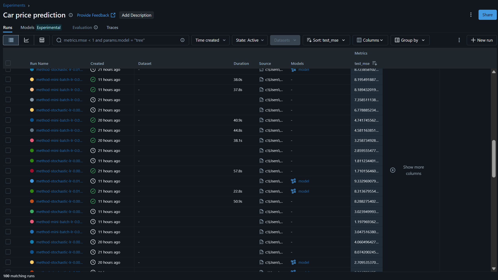

A2: Predicting Car Price¶
In [84]:
#import library
import numpy as np
import pandas as pd
import seaborn as sns
import matplotlib.pyplot as plt
import mlflow
import joblib
import warnings
warnings.filterwarnings('ignore')
Preparing data¶
In [85]:
dt = pd.read_csv("../data/Cars.csv")
In [86]:
#cleansing data (from A1 predicting car price)
Owner_map = {"First Owner": 1,"Second Owner": 2,"Third Owner": 3,"Fourth & Above Owner": 4,"Test Drive Car": 5}
dt['owner']=dt['owner'].map(Owner_map)
dt = dt[(dt['fuel'] != 'CNG') & (dt['fuel'] != 'LPG')]
dt['mileage']=dt['mileage'].str.split().str[0].astype(float)
dt['engine']=dt['engine'].str.split().str[0].astype(float)
dt['max_power']=dt['max_power'].str.split().str[0].astype(float)
dt['name']=dt['name'].str.split().str[0]
dt = dt.rename(columns={'name':'brand'})
dt=dt.drop(columns =['torque'])
dt = dt[(dt['owner'] != 5)]
dt= pd.get_dummies(dt, columns=['fuel','transmission','seller_type','owner'],drop_first=True)
X = dt.drop(columns=['selling_price','engine','seats','brand'])
y = dt['selling_price']
In [87]:
#split train and test data
from sklearn.model_selection import train_test_split
X_train, X_test, y_train, y_test = train_test_split(X, y, test_size = 0.3, random_state = 42)
In [88]:
y_train = np.log(y_train)
y_test = np.log(y_test)
In [89]:
X_train['max_power'].fillna(X_train['max_power'].median(), inplace=True)
X_train['mileage'].fillna(X_train['mileage'].median(), inplace=True)
X_test['max_power'].fillna(X_train['max_power'].median(), inplace=True)
X_test['mileage'].fillna(X_train['mileage'].median(), inplace=True)
In [90]:
X_train.isna().sum()
Out[90]:
year 0 km_driven 0 mileage 0 max_power 0 fuel_Petrol 0 transmission_Manual 0 seller_type_Individual 0 seller_type_Trustmark Dealer 0 owner_2 0 owner_3 0 owner_4 0 dtype: int64
In [91]:
from sklearn.preprocessing import StandardScaler
num_features = ['year','km_driven','mileage','max_power']
scaler = StandardScaler()
X_train = X_train.copy()
X_test = X_test.copy()
X_train[num_features] = scaler.fit_transform(X_train[num_features])
X_test[num_features] = scaler.transform(X_test[num_features])
In [92]:
X_train = X_train.to_numpy(dtype=float)
y_train = y_train.to_numpy(dtype=float).ravel()
X_test = X_test.to_numpy(dtype=float)
y_test = y_test.to_numpy(dtype=float).ravel()
Task 1. Implementation¶
In [12]:
mlflow.set_tracking_uri("http://localhost:5000")
mlflow.set_experiment(experiment_name="Car price prediction")
Out[12]:
<Experiment: artifact_location='mlflow-artifacts:/176410324244826153', creation_time=1757511172590, experiment_id='176410324244826153', last_update_time=1757511172590, lifecycle_stage='active', name='Car price prediction', tags={}>
In [77]:
from sklearn.model_selection import KFold
from sklearn.preprocessing import StandardScaler
from sklearn.preprocessing import PolynomialFeatures
class LinearRegression(object):
kfold = KFold(n_splits=3)
def __init__(self,
regularization=None,
lr=0.001,
method='batch',
weight_init_mode='zeros',
use_momentum=True,
momentum=0.9,
degree=1, #for polynomial features
num_epochs=500,
batch_size=50,
cv=kfold,):
self.regularization = regularization
self.lr = lr
self.method = method
self.num_epochs = num_epochs
self.batch_size = batch_size
self.cv = cv
self.weight_init_mode = weight_init_mode
self.use_momentum = use_momentum
self.momentum = momentum
self.degree = degree
self.prev_step = 0
#metrics
#function mse that compute the mse score
def mse(self, ytrue, ypred):
ytrue = np.asarray(ytrue, dtype=float).reshape(-1) #(m,)
ypred = np.asarray(ypred, dtype=float).reshape(-1)
m = ytrue.size
if m == 0:
raise ValueError("Empty ytrue in mse")
else:
return ((ypred - ytrue) ** 2).sum() / ytrue.shape[0]
#add a function r2 that compute the r2 score
def r2(self, ytrue, ypred):
ss_res = np.sum((ytrue - ypred) ** 2)
ss_tot = np.sum((ytrue - ytrue.mean()) ** 2)
r2_score = 1.0 - (ss_res / ss_tot)
return r2_score
#initializers
#add a function xavier initialization method to calculated as a random number with uniform prob dist
def xavier_init(self,n_input,n_output):
lower,upper = -(1.0/np.sqrt(n_input)), (1.0/np.sqrt(n_input))
numbers = np.random.rand(n_output)
scaled =lower + numbers*(upper-lower)
return scaled
def fit(self, X_train, y_train):
self.kfold_scores = list()
#reset val loss
self.val_loss_old = np.inf
#cross-validation
for fold, (train_idx, val_idx) in enumerate(self.cv.split(X_train)):
X_cross_train = X_train[train_idx]
y_cross_train = y_train[train_idx]
X_cross_val = X_train[val_idx]
y_cross_val = y_train[val_idx]
if self.degree > 1:
X_cross_train = self.polynomial_features(X_cross_train, self.degree)
X_cross_val = self.polynomial_features(X_cross_val, self.degree)
if self.weight_init_mode in ('zero', 'zeros'):
self.theta = np.zeros(X_cross_train.shape[1])
elif self.weight_init_mode in ('xavier', 'xavier_init', 'xavier_weigh_init'):
self.theta = self.xavier_init(X_cross_train.shape[0],X_cross_train.shape[1])
else:
raise ValueError(f"unknown weight_init: {self.weight_init_mode}")
#define X_cross_train as only a subset of the data
#how big is this subset? => mini-batch size ==> 50
#one epoch will exhaust the WHOLE training set
with mlflow.start_run(run_name=f"Fold-{fold}", nested=True):
params = {"method": self.method, "lr": self.lr, "reg": type(self).__name__}
mlflow.log_params(params=params)
for epoch in range(self.num_epochs):
#with replacement or no replacement
#with replacement means just randomize
#with no replacement means 0:50, 51:100, 101:150, ......300:323
#shuffle your index
perm = np.random.permutation(X_cross_train.shape[0])
X_cross_train = X_cross_train[perm]
y_cross_train = y_cross_train[perm]
if self.method == 'stochastic':
for batch_idx in range(X_cross_train.shape[0]):
X_method_train = X_cross_train[batch_idx].reshape(1, -1) #(11,) ==> (1, 11) ==> (m, n)
y_method_train = y_cross_train[[batch_idx]]
train_loss = self._train(X_method_train, y_method_train)
elif self.method == 'mini-batch':
for batch_idx in range(0, X_cross_train.shape[0], self.batch_size):
#batch_idx = 0, 50, 100, 150
X_method_train = X_cross_train[batch_idx:batch_idx+self.batch_size, :]
y_method_train = y_cross_train[batch_idx:batch_idx+self.batch_size]
train_loss = self._train(X_method_train, y_method_train)
else: #batch
X_method_train = X_cross_train
y_method_train = y_cross_train
train_loss = self._train(X_method_train, y_method_train)
mlflow.log_metric(key="train_loss", value=train_loss, step=epoch)
yhat_val = self.predict(X_cross_val)
val_loss_new = self.mse(y_cross_val, yhat_val)
val_r2 = self.r2(y_cross_val, yhat_val)
mlflow.log_metric(key="val_loss", value=val_loss_new, step=epoch)
mlflow.log_metric(key="val_r2", value=val_r2, step=epoch)
#early stopping
if np.allclose(val_loss_new, self.val_loss_old):
break
self.val_loss_old = val_loss_new
self.kfold_scores.append(val_loss_new)
print(f"Fold {fold}: MSE Score - {val_loss_new}, R2 Score - {val_r2}")
#update
def _train(self, X, y):
yhat = self.predict(X)
m = X.shape[0]
if self.regularization is not None:
reg_grad = self.regularization.derivation(self.theta)
else: reg_grad = 0
grad = (1/m) * X.T @(yhat - y) + reg_grad
#add momentum from pseudocode
if self.use_momentum:
step = self.lr*grad
self.theta = self.theta - step + self.momentum*self.prev_step
self.prev_step = step
else:
self.theta = self.theta - self.lr * grad
return self.mse(y, yhat)
def predict(self, X, poly=False):
if X.ndim == 1:
X = X.reshape(1, -1) # (1, n)
if poly and self.degree > 1:
X = self.polynomial_features(X, self.degree)
return X @ self.theta
def _coef(self):
return self.theta[1:] #remind that theta is (w0, w1, w2, w3, w4.....wn)
#w0 is the bias or the intercept
#w1....wn are the weights / coefficients / theta
def _bias(self):
return self.theta[0]
#polynomial features
def polynomial_features(self,X, degree):
X_poly = np.ones((X.shape[0], 1))
for d in range(1, degree + 1):
X_poly = np.hstack((X_poly, X ** d))
return X_poly
In [78]:
class LassoPenalty:
def __init__(self, l):
self.l = l # lambda value
def __call__(self, theta): #__call__ allows us to call class as method
return self.l * np.sum(np.abs(theta))
def derivation(self, theta):
return self.l * np.sign(theta)
class RidgePenalty:
def __init__(self, l):
self.l = l
def __call__(self, theta): #__call__ allows us to call class as method
return self.l * np.sum(np.square(theta))
def derivation(self, theta):
return self.l * 2 * theta
class Lasso(LinearRegression):
def __init__(self, method, lr, l,weight_init_mode,use_momentum):
self.regularization = LassoPenalty(l)
super().__init__(self.regularization, lr, method,weight_init_mode,use_momentum)
class Ridge(LinearRegression):
def __init__(self, method, lr, l,weight_init_mode,use_momentum):
self.regularization = RidgePenalty(l)
super().__init__(self.regularization, lr, method,weight_init_mode,use_momentum)
class Polynomial(LinearRegression):
def __init__(self, method='batch', lr=0.001, weight_init_mode='zeros',use_momentum=True, momentum=0.9, degree=2):
super().__init__(regularization=None,lr=lr,method=method,weight_init_mode=weight_init_mode, use_momentum=use_momentum,momentum=momentum,degree=degree)
Task 2 Expirement¶
In [35]:
import sys
def str_to_class(classname):
return getattr(sys.modules[__name__], classname)
In [15]:
regs = ["Polynomial","Ridge", "Lasso","LinearRegression"] #(1) polynomial, lasso, ridge, normal
momentums=[True,False] #(2) with or without momentum
methods =['stochastic', 'mini-batch', 'batch'] #(3) stochastic, mini-batch, batch
weights =['zeros', 'xavier'] #(4) zero, xavier
learning_rates = [0.01, 0.001, 0.0001] #(5) learning rates
best_mse = float("inf")
i=0
#for loop order (4 regs -> 3 methods -> 3 learning rates -> 2 weights -> with or without momentum)
for reg in regs:
for lr in learning_rates:
for method in methods:
for weight in weights:
for momentum in momentums:
if reg == 'Polynomial':
params = {'method': method, 'lr': lr,'weight_init_mode':weight,'use_momentum':momentum ,'degree': 2}
elif reg == 'Ridge': # l = lambda
params = {'method': method, 'lr': lr, 'l': 0.1,'weight_init_mode':weight,'use_momentum':momentum}
elif reg == 'Lasso': # l = lambda
params = {'method': method, 'lr': lr, 'l': 0.1,'weight_init_mode':weight,'use_momentum':momentum}
else: #LinearRegression
params = {'method': method, 'lr': lr,'weight_init_mode':weight,'use_momentum':momentum}
mlflow.start_run(run_name=f"method-{params['method']}-lr-{params['lr']}-weight_init_mode-{params['weight_init_mode']}-use_momentum-{params['use_momentum']}-reg-{reg}", nested=True)
print("="*5, reg, "="*5)
type_of_regression = str_to_class(reg) #Ridge, Lasso, Polynomial, LinearRegression
model = type_of_regression(**params)
model.fit(X_train, y_train)
if reg == 'Polynomial':
poly = True
else:
poly = False
yhat = model.predict(X_test,poly)
mse = model.mse(y_test, yhat)
r2_score = model.r2(y_test, yhat)
print("Test MSE: ", mse)
print("Test R2: ", r2_score)
mlflow.log_metric(key="test_mse", value=mse)
mlflow.log_metric(key="test_r2", value=r2_score)
if mse < best_mse:
signature = mlflow.models.infer_signature(X_train, model.predict(X_train, poly))
logged_model = mlflow.sklearn.log_model(
model,
artifact_path=f"model",
signature=signature,
registered_model_name=f"model{i}")
i += 1
best_mse = mse
joblib.dump(model, f"method-{params['method']}-lr-{params['lr']}-weight_init_mode-{params['weight_init_mode']}-use_momentum-{params['use_momentum']}-reg-{reg}.joblib")
mlflow.end_run()
===== Polynomial ===== Fold 0: MSE Score - inf, R2 Score - -inf 🏃 View run Fold-0 at: http://localhost:5000/#/experiments/176410324244826153/runs/cc58962c2bfd4cf4aa08436a46861625 🧪 View experiment at: http://localhost:5000/#/experiments/176410324244826153 Fold 1: MSE Score - inf, R2 Score - -inf 🏃 View run Fold-1 at: http://localhost:5000/#/experiments/176410324244826153/runs/78f3b4a28522470da3b0a79291fe7735 🧪 View experiment at: http://localhost:5000/#/experiments/176410324244826153 Fold 2: MSE Score - inf, R2 Score - -inf 🏃 View run Fold-2 at: http://localhost:5000/#/experiments/176410324244826153/runs/b2d92822d48b43ddba956dfe4975f6c6 🧪 View experiment at: http://localhost:5000/#/experiments/176410324244826153 Test MSE: inf Test R2: -inf ===== Polynomial ===== Fold 0: MSE Score - inf, R2 Score - -inf 🏃 View run Fold-0 at: http://localhost:5000/#/experiments/176410324244826153/runs/1d7003debefa46bb926c2f6bdc4d1c17 🧪 View experiment at: http://localhost:5000/#/experiments/176410324244826153 Fold 1: MSE Score - inf, R2 Score - -inf 🏃 View run Fold-1 at: http://localhost:5000/#/experiments/176410324244826153/runs/2285ecdfa76f41f080621f61487b989f 🧪 View experiment at: http://localhost:5000/#/experiments/176410324244826153 Fold 2: MSE Score - inf, R2 Score - -inf 🏃 View run Fold-2 at: http://localhost:5000/#/experiments/176410324244826153/runs/fb6ea7a461e14e789b2cb68f1ddd387a 🧪 View experiment at: http://localhost:5000/#/experiments/176410324244826153 Test MSE: inf Test R2: -inf 🏃 View run method-stochastic-lr-0.01-weight_init_mode-zeros-use_momentum-False-reg-Polynomial at: http://localhost:5000/#/experiments/176410324244826153/runs/e9e07805b6fd4a3e9425ba2b6ec217f3 🧪 View experiment at: http://localhost:5000/#/experiments/176410324244826153 ===== Polynomial ===== Fold 0: MSE Score - inf, R2 Score - -inf 🏃 View run Fold-0 at: http://localhost:5000/#/experiments/176410324244826153/runs/f4cd4db2e71542e2b810d9ae659f7773 🧪 View experiment at: http://localhost:5000/#/experiments/176410324244826153 Fold 1: MSE Score - inf, R2 Score - -inf 🏃 View run Fold-1 at: http://localhost:5000/#/experiments/176410324244826153/runs/fbf920f4ec8146c0afbeb35733c2d879 🧪 View experiment at: http://localhost:5000/#/experiments/176410324244826153 Fold 2: MSE Score - inf, R2 Score - -inf 🏃 View run Fold-2 at: http://localhost:5000/#/experiments/176410324244826153/runs/1eb2489f80bd4f5da50140efdae32dd0 🧪 View experiment at: http://localhost:5000/#/experiments/176410324244826153 Test MSE: inf Test R2: -inf ===== Polynomial ===== Fold 0: MSE Score - inf, R2 Score - -inf 🏃 View run Fold-0 at: http://localhost:5000/#/experiments/176410324244826153/runs/31a755f1ab804f9fa9ebfbd9a4773da8 🧪 View experiment at: http://localhost:5000/#/experiments/176410324244826153 Fold 1: MSE Score - inf, R2 Score - -inf 🏃 View run Fold-1 at: http://localhost:5000/#/experiments/176410324244826153/runs/410b1a274763499983a1819f64e71d13 🧪 View experiment at: http://localhost:5000/#/experiments/176410324244826153 Fold 2: MSE Score - inf, R2 Score - -inf 🏃 View run Fold-2 at: http://localhost:5000/#/experiments/176410324244826153/runs/25fa05874eae42cb8bc314e7159d4313 🧪 View experiment at: http://localhost:5000/#/experiments/176410324244826153 Test MSE: inf Test R2: -inf 🏃 View run method-stochastic-lr-0.01-weight_init_mode-xavier-use_momentum-False-reg-Polynomial at: http://localhost:5000/#/experiments/176410324244826153/runs/a3f4013b40f243a7a2e7c22cd29cdaf6 🧪 View experiment at: http://localhost:5000/#/experiments/176410324244826153 ===== Polynomial ===== Fold 0: MSE Score - inf, R2 Score - -inf 🏃 View run Fold-0 at: http://localhost:5000/#/experiments/176410324244826153/runs/2f1ea5dba7934334a21f87119976467b 🧪 View experiment at: http://localhost:5000/#/experiments/176410324244826153 Fold 1: MSE Score - inf, R2 Score - -inf 🏃 View run Fold-1 at: http://localhost:5000/#/experiments/176410324244826153/runs/cd4c26b52abb4c54b169193b7e1845b5 🧪 View experiment at: http://localhost:5000/#/experiments/176410324244826153 Fold 2: MSE Score - inf, R2 Score - -inf 🏃 View run Fold-2 at: http://localhost:5000/#/experiments/176410324244826153/runs/ee676b0bea434473976aebe151a324fc 🧪 View experiment at: http://localhost:5000/#/experiments/176410324244826153 Test MSE: inf Test R2: -inf ===== Polynomial ===== Fold 0: MSE Score - inf, R2 Score - -inf 🏃 View run Fold-0 at: http://localhost:5000/#/experiments/176410324244826153/runs/accf7cd4bde9404e83e31fd765331e55 🧪 View experiment at: http://localhost:5000/#/experiments/176410324244826153 Fold 1: MSE Score - inf, R2 Score - -inf 🏃 View run Fold-1 at: http://localhost:5000/#/experiments/176410324244826153/runs/f79fe86b79cc484dbbe0af75cb398c0a 🧪 View experiment at: http://localhost:5000/#/experiments/176410324244826153
2025/09/12 11:36:00 WARNING mlflow.models.model: `artifact_path` is deprecated. Please use `name` instead.
Fold 2: MSE Score - 3.460195803809411e+82, R2 Score - -4.9828430928783446e+82 🏃 View run Fold-2 at: http://localhost:5000/#/experiments/176410324244826153/runs/30dad062d358442aa2162826259598f4 🧪 View experiment at: http://localhost:5000/#/experiments/176410324244826153 Test MSE: 7.549217636066139e+79 Test R2: -1.0729617484217485e+80
Registered model 'model0' already exists. Creating a new version of this model... 2025/09/12 11:36:02 INFO mlflow.store.model_registry.abstract_store: Waiting up to 300 seconds for model version to finish creation. Model name: model0, version 5 Created version '5' of model 'model0'.
🏃 View run method-mini-batch-lr-0.01-weight_init_mode-zeros-use_momentum-False-reg-Polynomial at: http://localhost:5000/#/experiments/176410324244826153/runs/da632699ce6548a9875c441cb3583515 🧪 View experiment at: http://localhost:5000/#/experiments/176410324244826153 ===== Polynomial ===== Fold 0: MSE Score - inf, R2 Score - -inf 🏃 View run Fold-0 at: http://localhost:5000/#/experiments/176410324244826153/runs/a05454caa929414baf383d7933287469 🧪 View experiment at: http://localhost:5000/#/experiments/176410324244826153 Fold 1: MSE Score - inf, R2 Score - -inf 🏃 View run Fold-1 at: http://localhost:5000/#/experiments/176410324244826153/runs/b43a1b3733f04e7792bd570cad69ccf0 🧪 View experiment at: http://localhost:5000/#/experiments/176410324244826153 Fold 2: MSE Score - inf, R2 Score - -inf 🏃 View run Fold-2 at: http://localhost:5000/#/experiments/176410324244826153/runs/8fc7ad1ce15d46df9b2338f5dad7029c 🧪 View experiment at: http://localhost:5000/#/experiments/176410324244826153 Test MSE: inf Test R2: -inf ===== Polynomial ===== Fold 0: MSE Score - inf, R2 Score - -inf 🏃 View run Fold-0 at: http://localhost:5000/#/experiments/176410324244826153/runs/c6494094e4d6460dae66901710398558 🧪 View experiment at: http://localhost:5000/#/experiments/176410324244826153 Fold 1: MSE Score - inf, R2 Score - -inf 🏃 View run Fold-1 at: http://localhost:5000/#/experiments/176410324244826153/runs/bfa44f5c45fc499b8078de2e6a6142db 🧪 View experiment at: http://localhost:5000/#/experiments/176410324244826153 Fold 2: MSE Score - 6.44609733319662e+113, R2 Score - -9.282680343516616e+113 🏃 View run Fold-2 at: http://localhost:5000/#/experiments/176410324244826153/runs/de16178f4663407c9e02439890a73b29 🧪 View experiment at: http://localhost:5000/#/experiments/176410324244826153 Test MSE: 7.058350391506966e+111 Test R2: -1.0031953431655308e+112 🏃 View run method-mini-batch-lr-0.01-weight_init_mode-xavier-use_momentum-False-reg-Polynomial at: http://localhost:5000/#/experiments/176410324244826153/runs/850a9189838c4b3d92d256d301804a75 🧪 View experiment at: http://localhost:5000/#/experiments/176410324244826153 ===== Polynomial ===== Fold 0: MSE Score - inf, R2 Score - -inf 🏃 View run Fold-0 at: http://localhost:5000/#/experiments/176410324244826153/runs/09049de2c58d4c728594d17cef404a79 🧪 View experiment at: http://localhost:5000/#/experiments/176410324244826153 Fold 1: MSE Score - inf, R2 Score - -inf 🏃 View run Fold-1 at: http://localhost:5000/#/experiments/176410324244826153/runs/b16a25d0dd884d51aed25dc207a06ceb 🧪 View experiment at: http://localhost:5000/#/experiments/176410324244826153
2025/09/12 11:37:59 WARNING mlflow.models.model: `artifact_path` is deprecated. Please use `name` instead.
Fold 2: MSE Score - 14.408090944176276, R2 Score - -19.748321919734398 🏃 View run Fold-2 at: http://localhost:5000/#/experiments/176410324244826153/runs/261c744bb7494dada54c818da963387d 🧪 View experiment at: http://localhost:5000/#/experiments/176410324244826153 Test MSE: 15.939296934556882 Test R2: -21.654342121241946
Registered model 'model1' already exists. Creating a new version of this model... 2025/09/12 11:38:01 INFO mlflow.store.model_registry.abstract_store: Waiting up to 300 seconds for model version to finish creation. Model name: model1, version 3 Created version '3' of model 'model1'.
===== Polynomial ===== Fold 0: MSE Score - inf, R2 Score - -inf 🏃 View run Fold-0 at: http://localhost:5000/#/experiments/176410324244826153/runs/8f5932a82df64414a15def7fabc35cc1 🧪 View experiment at: http://localhost:5000/#/experiments/176410324244826153 Fold 1: MSE Score - inf, R2 Score - -inf 🏃 View run Fold-1 at: http://localhost:5000/#/experiments/176410324244826153/runs/08b7096d530c45fbbf31da6aee714259 🧪 View experiment at: http://localhost:5000/#/experiments/176410324244826153
2025/09/12 11:39:20 WARNING mlflow.models.model: `artifact_path` is deprecated. Please use `name` instead.
Fold 2: MSE Score - 3.9942880308516795, R2 Score - -4.751960771579561 🏃 View run Fold-2 at: http://localhost:5000/#/experiments/176410324244826153/runs/d0347e695ef0480f90cff9056c648cda 🧪 View experiment at: http://localhost:5000/#/experiments/176410324244826153 Test MSE: 4.284207389089759 Test R2: -5.089095416772866
Registered model 'model2' already exists. Creating a new version of this model... 2025/09/12 11:39:22 INFO mlflow.store.model_registry.abstract_store: Waiting up to 300 seconds for model version to finish creation. Model name: model2, version 3 Created version '3' of model 'model2'.
🏃 View run method-batch-lr-0.01-weight_init_mode-zeros-use_momentum-False-reg-Polynomial at: http://localhost:5000/#/experiments/176410324244826153/runs/86312a80640449c382eafd8e26b25d7d 🧪 View experiment at: http://localhost:5000/#/experiments/176410324244826153 ===== Polynomial ===== Fold 0: MSE Score - inf, R2 Score - -inf 🏃 View run Fold-0 at: http://localhost:5000/#/experiments/176410324244826153/runs/398965ae1dab43d8b520167630c015e5 🧪 View experiment at: http://localhost:5000/#/experiments/176410324244826153 Fold 1: MSE Score - inf, R2 Score - -inf 🏃 View run Fold-1 at: http://localhost:5000/#/experiments/176410324244826153/runs/c6e432a540eb4d14908f44c11778503e 🧪 View experiment at: http://localhost:5000/#/experiments/176410324244826153 Fold 2: MSE Score - 14.350052823948596, R2 Score - -19.664744323870675 🏃 View run Fold-2 at: http://localhost:5000/#/experiments/176410324244826153/runs/4394bf52c9454143b8b3cf2a140bbdf0 🧪 View experiment at: http://localhost:5000/#/experiments/176410324244826153 Test MSE: 15.882744611027631 Test R2: -21.57396494461722 ===== Polynomial ===== Fold 0: MSE Score - inf, R2 Score - -inf 🏃 View run Fold-0 at: http://localhost:5000/#/experiments/176410324244826153/runs/3c70d54d860049d6838f91d2e6595113 🧪 View experiment at: http://localhost:5000/#/experiments/176410324244826153 Fold 1: MSE Score - inf, R2 Score - -inf 🏃 View run Fold-1 at: http://localhost:5000/#/experiments/176410324244826153/runs/f80470eeb48d4527b18b6ff4a4db251e 🧪 View experiment at: http://localhost:5000/#/experiments/176410324244826153
2025/09/12 11:41:32 WARNING mlflow.models.model: `artifact_path` is deprecated. Please use `name` instead.
Fold 2: MSE Score - 3.9864162353762507, R2 Score - -4.740625019518909 🏃 View run Fold-2 at: http://localhost:5000/#/experiments/176410324244826153/runs/4d4e0d396aba40718c7e9dd6ddf66a99 🧪 View experiment at: http://localhost:5000/#/experiments/176410324244826153 Test MSE: 4.2761572280502405 Test R2: -5.077653814105627
Registered model 'model3' already exists. Creating a new version of this model... 2025/09/12 11:41:35 INFO mlflow.store.model_registry.abstract_store: Waiting up to 300 seconds for model version to finish creation. Model name: model3, version 3 Created version '3' of model 'model3'.
🏃 View run method-batch-lr-0.01-weight_init_mode-xavier-use_momentum-False-reg-Polynomial at: http://localhost:5000/#/experiments/176410324244826153/runs/897557a9b05645028ec9f68ce1ade1ab 🧪 View experiment at: http://localhost:5000/#/experiments/176410324244826153 ===== Polynomial ===== Fold 0: MSE Score - inf, R2 Score - -inf 🏃 View run Fold-0 at: http://localhost:5000/#/experiments/176410324244826153/runs/d2abf5d9d18f4098ad57543f7b8c9872 🧪 View experiment at: http://localhost:5000/#/experiments/176410324244826153 Fold 1: MSE Score - inf, R2 Score - -inf 🏃 View run Fold-1 at: http://localhost:5000/#/experiments/176410324244826153/runs/bb5fc7577ee1432096568966a44422af 🧪 View experiment at: http://localhost:5000/#/experiments/176410324244826153 Fold 2: MSE Score - inf, R2 Score - -inf 🏃 View run Fold-2 at: http://localhost:5000/#/experiments/176410324244826153/runs/1ed87c993b254df99a0facdfe2e16f00 🧪 View experiment at: http://localhost:5000/#/experiments/176410324244826153 Test MSE: inf Test R2: -inf ===== Polynomial ===== Fold 0: MSE Score - inf, R2 Score - -inf 🏃 View run Fold-0 at: http://localhost:5000/#/experiments/176410324244826153/runs/3fb7423bc5dd4288b5f11c939dae94f3 🧪 View experiment at: http://localhost:5000/#/experiments/176410324244826153 Fold 1: MSE Score - inf, R2 Score - -inf 🏃 View run Fold-1 at: http://localhost:5000/#/experiments/176410324244826153/runs/46fd76e4594341ac9a016abf8ce302e4 🧪 View experiment at: http://localhost:5000/#/experiments/176410324244826153 Fold 2: MSE Score - inf, R2 Score - -inf 🏃 View run Fold-2 at: http://localhost:5000/#/experiments/176410324244826153/runs/8540eb37d7a9441b9f5b2cbda3eded80 🧪 View experiment at: http://localhost:5000/#/experiments/176410324244826153 Test MSE: 8.288275402126922e+302 Test R2: -1.1780031912685954e+303 🏃 View run method-stochastic-lr-0.001-weight_init_mode-zeros-use_momentum-False-reg-Polynomial at: http://localhost:5000/#/experiments/176410324244826153/runs/217f25979a1f462a9a85d9f39df7a132 🧪 View experiment at: http://localhost:5000/#/experiments/176410324244826153 ===== Polynomial ===== Fold 0: MSE Score - inf, R2 Score - -inf 🏃 View run Fold-0 at: http://localhost:5000/#/experiments/176410324244826153/runs/7cbf282b0cc9412c945830142fc77e64 🧪 View experiment at: http://localhost:5000/#/experiments/176410324244826153 Fold 1: MSE Score - inf, R2 Score - -inf 🏃 View run Fold-1 at: http://localhost:5000/#/experiments/176410324244826153/runs/5f04d096732f4c74aee7c3d0699cb7ff 🧪 View experiment at: http://localhost:5000/#/experiments/176410324244826153 Fold 2: MSE Score - inf, R2 Score - -inf 🏃 View run Fold-2 at: http://localhost:5000/#/experiments/176410324244826153/runs/9833c2a8f4ff46e69cf38eb6525a5ec0 🧪 View experiment at: http://localhost:5000/#/experiments/176410324244826153 Test MSE: inf Test R2: -inf ===== Polynomial ===== Fold 0: MSE Score - inf, R2 Score - -inf 🏃 View run Fold-0 at: http://localhost:5000/#/experiments/176410324244826153/runs/95eb167b50a248789e2b4b5f5b404c6d 🧪 View experiment at: http://localhost:5000/#/experiments/176410324244826153 Fold 1: MSE Score - inf, R2 Score - -inf 🏃 View run Fold-1 at: http://localhost:5000/#/experiments/176410324244826153/runs/ffd56c059c9248fba57625e659d1da6a 🧪 View experiment at: http://localhost:5000/#/experiments/176410324244826153 Fold 2: MSE Score - inf, R2 Score - -inf 🏃 View run Fold-2 at: http://localhost:5000/#/experiments/176410324244826153/runs/e97f35ac452e469ab7965e25e530785b 🧪 View experiment at: http://localhost:5000/#/experiments/176410324244826153 Test MSE: inf Test R2: -inf 🏃 View run method-stochastic-lr-0.001-weight_init_mode-xavier-use_momentum-False-reg-Polynomial at: http://localhost:5000/#/experiments/176410324244826153/runs/515e6d4d8dd740e99e322aca25389c9c 🧪 View experiment at: http://localhost:5000/#/experiments/176410324244826153 ===== Polynomial ===== Fold 0: MSE Score - 4.561223788722485e+92, R2 Score - -6.643387340873878e+92 🏃 View run Fold-0 at: http://localhost:5000/#/experiments/176410324244826153/runs/fc2225e6436a47c69e795589ac52d9d2 🧪 View experiment at: http://localhost:5000/#/experiments/176410324244826153 Fold 1: MSE Score - inf, R2 Score - -inf 🏃 View run Fold-1 at: http://localhost:5000/#/experiments/176410324244826153/runs/e75ab345b87845a9871020c10bca21a3 🧪 View experiment at: http://localhost:5000/#/experiments/176410324244826153 Fold 2: MSE Score - 2.779426613489474e+294, R2 Score - -4.002503756562301e+294 🏃 View run Fold-2 at: http://localhost:5000/#/experiments/176410324244826153/runs/5b9d3ef481474119b9e29693778e41f6 🧪 View experiment at: http://localhost:5000/#/experiments/176410324244826153 Test MSE: 3.047516380053828e+294 Test R2: -4.3314004988606814e+294 ===== Polynomial ===== Fold 0: MSE Score - inf, R2 Score - -inf 🏃 View run Fold-0 at: http://localhost:5000/#/experiments/176410324244826153/runs/3150b155f96a4b06a04d90b8124d381f 🧪 View experiment at: http://localhost:5000/#/experiments/176410324244826153 Fold 1: MSE Score - inf, R2 Score - -inf 🏃 View run Fold-1 at: http://localhost:5000/#/experiments/176410324244826153/runs/14ed40dab3c74409a1385a1cbb443432 🧪 View experiment at: http://localhost:5000/#/experiments/176410324244826153 Fold 2: MSE Score - inf, R2 Score - -inf 🏃 View run Fold-2 at: http://localhost:5000/#/experiments/176410324244826153/runs/fe9758a8a94849db9d5e99261d0d55ce 🧪 View experiment at: http://localhost:5000/#/experiments/176410324244826153 Test MSE: 8.189432019417234e+303 Test R2: -1.1639546932857802e+304 🏃 View run method-mini-batch-lr-0.001-weight_init_mode-zeros-use_momentum-False-reg-Polynomial at: http://localhost:5000/#/experiments/176410324244826153/runs/033b93992185441d939ffa270fc4658d 🧪 View experiment at: http://localhost:5000/#/experiments/176410324244826153 ===== Polynomial ===== Fold 0: MSE Score - 4.49311898980469e+81, R2 Score - -6.544193225447684e+81 🏃 View run Fold-0 at: http://localhost:5000/#/experiments/176410324244826153/runs/031045d73b71408b9fce859571c7ab6b 🧪 View experiment at: http://localhost:5000/#/experiments/176410324244826153 Fold 1: MSE Score - inf, R2 Score - -inf 🏃 View run Fold-1 at: http://localhost:5000/#/experiments/176410324244826153/runs/f92da5c8364e4fb8ad71b9c402c61e26 🧪 View experiment at: http://localhost:5000/#/experiments/176410324244826153 Fold 2: MSE Score - 1.3297202935420905e+295, R2 Score - -1.9148591454974556e+295 🏃 View run Fold-2 at: http://localhost:5000/#/experiments/176410324244826153/runs/0e23faa534f64e2a88fb4fd329f3a85c 🧪 View experiment at: http://localhost:5000/#/experiments/176410324244826153 Test MSE: 1.1979693623766097e+295 Test R2: -1.7026602802791857e+295 ===== Polynomial ===== Fold 0: MSE Score - inf, R2 Score - -inf 🏃 View run Fold-0 at: http://localhost:5000/#/experiments/176410324244826153/runs/7388af11ff454247993ecf00873efbca 🧪 View experiment at: http://localhost:5000/#/experiments/176410324244826153 Fold 1: MSE Score - inf, R2 Score - -inf 🏃 View run Fold-1 at: http://localhost:5000/#/experiments/176410324244826153/runs/ee2527b7e4f54068b27ee15ed2cfa23e 🧪 View experiment at: http://localhost:5000/#/experiments/176410324244826153 Fold 2: MSE Score - inf, R2 Score - -inf 🏃 View run Fold-2 at: http://localhost:5000/#/experiments/176410324244826153/runs/a068bdf7efd745b5b9e33a902c7d65cb 🧪 View experiment at: http://localhost:5000/#/experiments/176410324244826153 Test MSE: 8.19549188734187e+303 Test R2: -1.1648159754473327e+304 🏃 View run method-mini-batch-lr-0.001-weight_init_mode-xavier-use_momentum-False-reg-Polynomial at: http://localhost:5000/#/experiments/176410324244826153/runs/5afced026eaa4dc0a20a6dfe31ac3d42 🧪 View experiment at: http://localhost:5000/#/experiments/176410324244826153 ===== Polynomial ===== Fold 0: MSE Score - 86.03268943232565, R2 Score - -124.30594997096739 🏃 View run Fold-0 at: http://localhost:5000/#/experiments/176410324244826153/runs/5265ef4ffb4c405db58427e74cd953eb 🧪 View experiment at: http://localhost:5000/#/experiments/176410324244826153 Fold 1: MSE Score - 85.92628856897801, R2 Score - -117.80186670544946 🏃 View run Fold-1 at: http://localhost:5000/#/experiments/176410324244826153/runs/1ead2ed95b574118a2ed6e7a047468a0 🧪 View experiment at: http://localhost:5000/#/experiments/176410324244826153 Fold 2: MSE Score - 92.6766837141083, R2 Score - -132.4587403427622 🏃 View run Fold-2 at: http://localhost:5000/#/experiments/176410324244826153/runs/672feee75a2d4563aa8641cb68b93170 🧪 View experiment at: http://localhost:5000/#/experiments/176410324244826153 Test MSE: 86.27995742655666 Test R2: -121.62872583230053 ===== Polynomial ===== Fold 0: MSE Score - 11.019043306475856, R2 Score - -15.049151763124907 🏃 View run Fold-0 at: http://localhost:5000/#/experiments/176410324244826153/runs/74d8166e4fd74f0dbf3b9a90f97c3a59 🧪 View experiment at: http://localhost:5000/#/experiments/176410324244826153 Fold 1: MSE Score - 12.249159964218517, R2 Score - -15.935714244827697 🏃 View run Fold-1 at: http://localhost:5000/#/experiments/176410324244826153/runs/b0a9ab0489d349e8905f990cfd386c76 🧪 View experiment at: http://localhost:5000/#/experiments/176410324244826153 Fold 2: MSE Score - 14.23776214167885, R2 Score - -19.50304051221747 🏃 View run Fold-2 at: http://localhost:5000/#/experiments/176410324244826153/runs/e245cd4fe83f4714be56f896ea6b3ef3 🧪 View experiment at: http://localhost:5000/#/experiments/176410324244826153 Test MSE: 15.767509937862643 Test R2: -21.410183209398436 🏃 View run method-batch-lr-0.001-weight_init_mode-zeros-use_momentum-False-reg-Polynomial at: http://localhost:5000/#/experiments/176410324244826153/runs/4b55f1a506db48ee80b1620b42fa02bb 🧪 View experiment at: http://localhost:5000/#/experiments/176410324244826153 ===== Polynomial ===== Fold 0: MSE Score - 85.86705574812993, R2 Score - -124.06470578480646 🏃 View run Fold-0 at: http://localhost:5000/#/experiments/176410324244826153/runs/5e566d42481a4d11b0177239934f0690 🧪 View experiment at: http://localhost:5000/#/experiments/176410324244826153 Fold 1: MSE Score - 85.57683546795457, R2 Score - -117.31871211540492 🏃 View run Fold-1 at: http://localhost:5000/#/experiments/176410324244826153/runs/14179e4a18bd484598666c40698fd2a7 🧪 View experiment at: http://localhost:5000/#/experiments/176410324244826153 Fold 2: MSE Score - 92.47396850132061, R2 Score - -132.16682099624762 🏃 View run Fold-2 at: http://localhost:5000/#/experiments/176410324244826153/runs/b638806a07364848a43d3c44886b7091 🧪 View experiment at: http://localhost:5000/#/experiments/176410324244826153 Test MSE: 86.01747110496609 Test R2: -121.25565699771681 ===== Polynomial ===== Fold 0: MSE Score - 11.019540824646189, R2 Score - -15.049876394510637 🏃 View run Fold-0 at: http://localhost:5000/#/experiments/176410324244826153/runs/7c682603d2c84c8f9d18de7cf4941c50 🧪 View experiment at: http://localhost:5000/#/experiments/176410324244826153 Fold 1: MSE Score - 12.238207996676609, R2 Score - -15.920572031545301 🏃 View run Fold-1 at: http://localhost:5000/#/experiments/176410324244826153/runs/52437347bdbc43ad825ffd1b9ee4d519 🧪 View experiment at: http://localhost:5000/#/experiments/176410324244826153 Fold 2: MSE Score - 14.244771583550834, R2 Score - -19.513134434930834 🏃 View run Fold-2 at: http://localhost:5000/#/experiments/176410324244826153/runs/85c0f77d922644f284046b2423eb4cfc 🧪 View experiment at: http://localhost:5000/#/experiments/176410324244826153 Test MSE: 15.75565506502762 Test R2: -21.393334012968314 🏃 View run method-batch-lr-0.001-weight_init_mode-xavier-use_momentum-False-reg-Polynomial at: http://localhost:5000/#/experiments/176410324244826153/runs/d956dbc4f7c0475eb78200feb009499b 🧪 View experiment at: http://localhost:5000/#/experiments/176410324244826153 ===== Polynomial ===== Fold 0: MSE Score - inf, R2 Score - -inf 🏃 View run Fold-0 at: http://localhost:5000/#/experiments/176410324244826153/runs/0801daf2bd7348aeba412bc730903360 🧪 View experiment at: http://localhost:5000/#/experiments/176410324244826153 Fold 1: MSE Score - inf, R2 Score - -inf 🏃 View run Fold-1 at: http://localhost:5000/#/experiments/176410324244826153/runs/f0425881df6d4dde84572f191db6553f 🧪 View experiment at: http://localhost:5000/#/experiments/176410324244826153 Fold 2: MSE Score - inf, R2 Score - -inf 🏃 View run Fold-2 at: http://localhost:5000/#/experiments/176410324244826153/runs/1933d9a672f44530953047ff630e6cdc 🧪 View experiment at: http://localhost:5000/#/experiments/176410324244826153 Test MSE: 3.0239499935550565e+302 Test R2: -4.297905860766129e+302 ===== Polynomial ===== Fold 0: MSE Score - inf, R2 Score - -inf 🏃 View run Fold-0 at: http://localhost:5000/#/experiments/176410324244826153/runs/199af469c2dc4f5582217cb541335710 🧪 View experiment at: http://localhost:5000/#/experiments/176410324244826153 Fold 1: MSE Score - inf, R2 Score - -inf 🏃 View run Fold-1 at: http://localhost:5000/#/experiments/176410324244826153/runs/7654e6d83ace46c1a7fc2e0a0df9654d 🧪 View experiment at: http://localhost:5000/#/experiments/176410324244826153 Fold 2: MSE Score - inf, R2 Score - -inf 🏃 View run Fold-2 at: http://localhost:5000/#/experiments/176410324244826153/runs/c0ae6c09d10f460bbec465a0482b33d5 🧪 View experiment at: http://localhost:5000/#/experiments/176410324244826153 Test MSE: 1.2707678938813272e+304 Test R2: -1.8061280082099174e+304 🏃 View run method-stochastic-lr-0.0001-weight_init_mode-zeros-use_momentum-False-reg-Polynomial at: http://localhost:5000/#/experiments/176410324244826153/runs/9721cf3ab90d4b9fa84e130c1dfeaa25 🧪 View experiment at: http://localhost:5000/#/experiments/176410324244826153 ===== Polynomial ===== Fold 0: MSE Score - inf, R2 Score - -inf 🏃 View run Fold-0 at: http://localhost:5000/#/experiments/176410324244826153/runs/50795fedac114875b8137bf0d6dda41a 🧪 View experiment at: http://localhost:5000/#/experiments/176410324244826153 Fold 1: MSE Score - inf, R2 Score - -inf 🏃 View run Fold-1 at: http://localhost:5000/#/experiments/176410324244826153/runs/0ce4b61708454a99b111891be85fdb13 🧪 View experiment at: http://localhost:5000/#/experiments/176410324244826153 Fold 2: MSE Score - inf, R2 Score - -inf 🏃 View run Fold-2 at: http://localhost:5000/#/experiments/176410324244826153/runs/907f9e3cb24543a38930c1f1281e4574 🧪 View experiment at: http://localhost:5000/#/experiments/176410324244826153 Test MSE: 1.811234401052208e+303 Test R2: -2.5742869307014492e+303 ===== Polynomial ===== Fold 0: MSE Score - inf, R2 Score - -inf 🏃 View run Fold-0 at: http://localhost:5000/#/experiments/176410324244826153/runs/69a7edcf01d94a24b0c492a16a1910c4 🧪 View experiment at: http://localhost:5000/#/experiments/176410324244826153 Fold 1: MSE Score - inf, R2 Score - -inf 🏃 View run Fold-1 at: http://localhost:5000/#/experiments/176410324244826153/runs/c074b5fc6d224875af80977b4652ae27 🧪 View experiment at: http://localhost:5000/#/experiments/176410324244826153 Fold 2: MSE Score - inf, R2 Score - -inf 🏃 View run Fold-2 at: http://localhost:5000/#/experiments/176410324244826153/runs/c129f915943e46739b1dc9c89e6065f0 🧪 View experiment at: http://localhost:5000/#/experiments/176410324244826153 Test MSE: 6.318497788485992e+304 Test R2: -8.9804093104218e+304 🏃 View run method-stochastic-lr-0.0001-weight_init_mode-xavier-use_momentum-False-reg-Polynomial at: http://localhost:5000/#/experiments/176410324244826153/runs/51dbdf63645a495db13a170be58ff3e6 🧪 View experiment at: http://localhost:5000/#/experiments/176410324244826153 ===== Polynomial ===== Fold 0: MSE Score - 14.014539432623707, R2 Score - -19.412068814748253 🏃 View run Fold-0 at: http://localhost:5000/#/experiments/176410324244826153/runs/a79c98ccc4de4cb8a7f3e9e9c9579e6a 🧪 View experiment at: http://localhost:5000/#/experiments/176410324244826153 Fold 1: MSE Score - 15.367649139311087, R2 Score - -20.247343915697595 🏃 View run Fold-1 at: http://localhost:5000/#/experiments/176410324244826153/runs/e9dacd8713d643299d314a673e1ed2cd 🧪 View experiment at: http://localhost:5000/#/experiments/176410324244826153 Fold 2: MSE Score - 17.590070749819173, R2 Score - -24.330521019210394 🏃 View run Fold-2 at: http://localhost:5000/#/experiments/176410324244826153/runs/656c426f56514781b03531673402b650 🧪 View experiment at: http://localhost:5000/#/experiments/176410324244826153 Test MSE: 19.35091119216097 Test R2: -26.503230807787926 ===== Polynomial ===== Fold 0: MSE Score - 2.7780417263519166e+59, R2 Score - -4.046196392050918e+59 🏃 View run Fold-0 at: http://localhost:5000/#/experiments/176410324244826153/runs/c62302a14b1e49d9bf9d8c1a06ccb5ef 🧪 View experiment at: http://localhost:5000/#/experiments/176410324244826153 Fold 1: MSE Score - inf, R2 Score - -inf 🏃 View run Fold-1 at: http://localhost:5000/#/experiments/176410324244826153/runs/e993028d431143c981cf8cc1377a8b90 🧪 View experiment at: http://localhost:5000/#/experiments/176410324244826153 Fold 2: MSE Score - 4.6154142659640875, R2 Score - -5.646411474926483 🏃 View run Fold-2 at: http://localhost:5000/#/experiments/176410324244826153/runs/5826d7ce6c47443994878b362871d3ae 🧪 View experiment at: http://localhost:5000/#/experiments/176410324244826153 Test MSE: 5.018739645323325 Test R2: -6.133077789403504 🏃 View run method-mini-batch-lr-0.0001-weight_init_mode-zeros-use_momentum-False-reg-Polynomial at: http://localhost:5000/#/experiments/176410324244826153/runs/c3e6b34085414637bd9dc55ba45587c9 🧪 View experiment at: http://localhost:5000/#/experiments/176410324244826153 ===== Polynomial ===== Fold 0: MSE Score - 13.998884564727474, R2 Score - -19.389267620151745 🏃 View run Fold-0 at: http://localhost:5000/#/experiments/176410324244826153/runs/8badee17893042e49d0518281c3d084c 🧪 View experiment at: http://localhost:5000/#/experiments/176410324244826153 Fold 1: MSE Score - 15.435000583732384, R2 Score - -20.34046416394543 🏃 View run Fold-1 at: http://localhost:5000/#/experiments/176410324244826153/runs/a4cb283989864d7b8b54b2dc44c63d41 🧪 View experiment at: http://localhost:5000/#/experiments/176410324244826153 Fold 2: MSE Score - 17.56809372404695, R2 Score - -24.298873078665938 🏃 View run Fold-2 at: http://localhost:5000/#/experiments/176410324244826153/runs/deed19c8b35b4610960ad19c83ae4550 🧪 View experiment at: http://localhost:5000/#/experiments/176410324244826153 Test MSE: 19.369922704608584 Test R2: -26.53025165500589 ===== Polynomial ===== Fold 0: MSE Score - 3.9286694322208095e+49, R2 Score - -5.722076789353045e+49 🏃 View run Fold-0 at: http://localhost:5000/#/experiments/176410324244826153/runs/765012e9e0a1444aacd06643287048ba 🧪 View experiment at: http://localhost:5000/#/experiments/176410324244826153 Fold 1: MSE Score - inf, R2 Score - -inf 🏃 View run Fold-1 at: http://localhost:5000/#/experiments/176410324244826153/runs/fedd03a326914b88aca6bac273f1cd19 🧪 View experiment at: http://localhost:5000/#/experiments/176410324244826153 Fold 2: MSE Score - 6.098584664750515, R2 Score - -7.782245917884392 🏃 View run Fold-2 at: http://localhost:5000/#/experiments/176410324244826153/runs/009587bcdb0345bd8561bfe984ef9854 🧪 View experiment at: http://localhost:5000/#/experiments/176410324244826153 Test MSE: 6.817859246689329 Test R2: -8.690146092586536 🏃 View run method-mini-batch-lr-0.0001-weight_init_mode-xavier-use_momentum-False-reg-Polynomial at: http://localhost:5000/#/experiments/176410324244826153/runs/360939ae4c334de9924cda02181b1ae7 🧪 View experiment at: http://localhost:5000/#/experiments/176410324244826153 ===== Polynomial ===== Fold 0: MSE Score - 157.21368634540278, R2 Score - -227.98052410002254 🏃 View run Fold-0 at: http://localhost:5000/#/experiments/176410324244826153/runs/e7cba2520a1840e3b61a8a8d7c8dbcd0 🧪 View experiment at: http://localhost:5000/#/experiments/176410324244826153 Fold 1: MSE Score - 156.5948854788187, R2 Score - -215.50841693779688 🏃 View run Fold-1 at: http://localhost:5000/#/experiments/176410324244826153/runs/31c380b0ebb644fb953156263e12bbff 🧪 View experiment at: http://localhost:5000/#/experiments/176410324244826153 Fold 2: MSE Score - 157.60619476184243, R2 Score - -225.9602599076332 🏃 View run Fold-2 at: http://localhost:5000/#/experiments/176410324244826153/runs/d03a4e76624642a4815d3f42db3fb88c 🧪 View experiment at: http://localhost:5000/#/experiments/176410324244826153 Test MSE: 156.2697738270062 Test R2: -221.10445881153393 ===== Polynomial ===== Fold 0: MSE Score - 86.56324234380159, R2 Score - -125.07869620290579 🏃 View run Fold-0 at: http://localhost:5000/#/experiments/176410324244826153/runs/7143f4d0a69546d3bbb8993842520ff0 🧪 View experiment at: http://localhost:5000/#/experiments/176410324244826153 Fold 1: MSE Score - 85.8545853448659, R2 Score - -117.70272967747832 🏃 View run Fold-1 at: http://localhost:5000/#/experiments/176410324244826153/runs/e3076803eb3a4834bb0e54e8e95b7a68 🧪 View experiment at: http://localhost:5000/#/experiments/176410324244826153 Fold 2: MSE Score - 92.6582980716165, R2 Score - -132.43226416138614 🏃 View run Fold-2 at: http://localhost:5000/#/experiments/176410324244826153/runs/2ac2b36e4f734043800343e9ea74b5a6 🧪 View experiment at: http://localhost:5000/#/experiments/176410324244826153 Test MSE: 86.20099314937237 Test R2: -121.5164947999009 🏃 View run method-batch-lr-0.0001-weight_init_mode-zeros-use_momentum-False-reg-Polynomial at: http://localhost:5000/#/experiments/176410324244826153/runs/00568e2ae0134236820951eff8bac74e 🧪 View experiment at: http://localhost:5000/#/experiments/176410324244826153 ===== Polynomial ===== Fold 0: MSE Score - 157.4495992266823, R2 Score - -228.32412939580226 🏃 View run Fold-0 at: http://localhost:5000/#/experiments/176410324244826153/runs/b88cc42b7124491bba2259ece8b933b7 🧪 View experiment at: http://localhost:5000/#/experiments/176410324244826153 Fold 1: MSE Score - 156.48503171597662, R2 Score - -215.35653289500152 🏃 View run Fold-1 at: http://localhost:5000/#/experiments/176410324244826153/runs/7ca6d39e8cd74d54a1a117fec520ad8c 🧪 View experiment at: http://localhost:5000/#/experiments/176410324244826153 Fold 2: MSE Score - 158.03055735654723, R2 Score - -226.57136180584743 🏃 View run Fold-2 at: http://localhost:5000/#/experiments/176410324244826153/runs/ea504919a81647728ebc6df92142f958 🧪 View experiment at: http://localhost:5000/#/experiments/176410324244826153 Test MSE: 156.35802182886738 Test R2: -221.22988469662084 ===== Polynomial ===== Fold 0: MSE Score - 86.95977486141163, R2 Score - -125.6562427627235 🏃 View run Fold-0 at: http://localhost:5000/#/experiments/176410324244826153/runs/171b129d729e4279857eaa2fc66be799 🧪 View experiment at: http://localhost:5000/#/experiments/176410324244826153 Fold 1: MSE Score - 85.5579897057628, R2 Score - -117.29265592509161 🏃 View run Fold-1 at: http://localhost:5000/#/experiments/176410324244826153/runs/357d18bdda5f47ec896ba71e00fa9ae3 🧪 View experiment at: http://localhost:5000/#/experiments/176410324244826153 Fold 2: MSE Score - 92.95011075753385, R2 Score - -132.85248801832415 🏃 View run Fold-2 at: http://localhost:5000/#/experiments/176410324244826153/runs/9dd5c9ebb4bc42c5b03af0983b87f363 🧪 View experiment at: http://localhost:5000/#/experiments/176410324244826153 Test MSE: 86.54742487232987 Test R2: -122.00887428224279 🏃 View run method-batch-lr-0.0001-weight_init_mode-xavier-use_momentum-False-reg-Polynomial at: http://localhost:5000/#/experiments/176410324244826153/runs/10cef8badd6a460b93ddb687c5486084 🧪 View experiment at: http://localhost:5000/#/experiments/176410324244826153 ===== Ridge ===== Fold 0: MSE Score - 14.113016641585792, R2 Score - -19.555500111629772 🏃 View run Fold-0 at: http://localhost:5000/#/experiments/176410324244826153/runs/06b804b0c8db4ab583d0e86728cc6272 🧪 View experiment at: http://localhost:5000/#/experiments/176410324244826153 Fold 1: MSE Score - 12.215936092266324, R2 Score - -15.889778849818349 🏃 View run Fold-1 at: http://localhost:5000/#/experiments/176410324244826153/runs/d1ee9673aee14509be6b3b7e662ace30 🧪 View experiment at: http://localhost:5000/#/experiments/176410324244826153 Fold 2: MSE Score - 12.971407927213, R2 Score - -17.679431471439585 🏃 View run Fold-2 at: http://localhost:5000/#/experiments/176410324244826153/runs/425c18c060c7418eaee312e4a585ca68 🧪 View experiment at: http://localhost:5000/#/experiments/176410324244826153 Test MSE: 13.054879954180631 Test R2: -17.55475295102615 ===== Ridge ===== Fold 0: MSE Score - 13.607641013645384, R2 Score - -18.819424399373208 🏃 View run Fold-0 at: http://localhost:5000/#/experiments/176410324244826153/runs/e6a4f3f14cdb414d9f53a92b333109e7 🧪 View experiment at: http://localhost:5000/#/experiments/176410324244826153 Fold 1: MSE Score - 13.429994580201711, R2 Score - -17.568338660306797 🏃 View run Fold-1 at: http://localhost:5000/#/experiments/176410324244826153/runs/3f0e18031f274659ba02cdb2050e19de 🧪 View experiment at: http://localhost:5000/#/experiments/176410324244826153 Fold 2: MSE Score - 13.631447639932995, R2 Score - -18.629919394675444 🏃 View run Fold-2 at: http://localhost:5000/#/experiments/176410324244826153/runs/0b60cf84ce99490d9c8a75d1c3829bf7 🧪 View experiment at: http://localhost:5000/#/experiments/176410324244826153 Test MSE: 13.746198988535864 Test R2: -18.53731686106008 🏃 View run method-stochastic-lr-0.01-weight_init_mode-zeros-use_momentum-False-reg-Ridge at: http://localhost:5000/#/experiments/176410324244826153/runs/0a98a5ee2d6d448383f404a4f656440d 🧪 View experiment at: http://localhost:5000/#/experiments/176410324244826153 ===== Ridge ===== Fold 0: MSE Score - 14.111396652483748, R2 Score - -19.55314060997158 🏃 View run Fold-0 at: http://localhost:5000/#/experiments/176410324244826153/runs/80edec02cc76483e99a9c27b40100166 🧪 View experiment at: http://localhost:5000/#/experiments/176410324244826153 Fold 1: MSE Score - 12.272172629629262, R2 Score - -15.967531604266767 🏃 View run Fold-1 at: http://localhost:5000/#/experiments/176410324244826153/runs/27e22d8fb47b45509a0095df93055e50 🧪 View experiment at: http://localhost:5000/#/experiments/176410324244826153 Fold 2: MSE Score - 12.745486088972807, R2 Score - -17.354093503580607 🏃 View run Fold-2 at: http://localhost:5000/#/experiments/176410324244826153/runs/53830c9cc4f04450b61d2b2bd51f17a1 🧪 View experiment at: http://localhost:5000/#/experiments/176410324244826153 Test MSE: 12.85207518403731 Test R2: -17.266508829249 ===== Ridge ===== Fold 0: MSE Score - 14.384701693430216, R2 Score - -19.95120729850153 🏃 View run Fold-0 at: http://localhost:5000/#/experiments/176410324244826153/runs/522039a4679f435f90fe5d7215439e0c 🧪 View experiment at: http://localhost:5000/#/experiments/176410324244826153 Fold 1: MSE Score - 13.110027959295403, R2 Score - -17.125952139485648 🏃 View run Fold-1 at: http://localhost:5000/#/experiments/176410324244826153/runs/3a39e0b966a04c1ea36d577a55eca04d 🧪 View experiment at: http://localhost:5000/#/experiments/176410324244826153 Fold 2: MSE Score - 13.598222946983757, R2 Score - -18.58207428961149 🏃 View run Fold-2 at: http://localhost:5000/#/experiments/176410324244826153/runs/92ceabfef5f74084af73b555f4ec40ee 🧪 View experiment at: http://localhost:5000/#/experiments/176410324244826153 Test MSE: 13.64368859650897 Test R2: -18.391620002441112 🏃 View run method-stochastic-lr-0.01-weight_init_mode-xavier-use_momentum-False-reg-Ridge at: http://localhost:5000/#/experiments/176410324244826153/runs/8f4022576d954d858951f813d6063bcf 🧪 View experiment at: http://localhost:5000/#/experiments/176410324244826153 ===== Ridge ===== Fold 0: MSE Score - 14.171662432434436, R2 Score - -19.64091725460853 🏃 View run Fold-0 at: http://localhost:5000/#/experiments/176410324244826153/runs/81b200237b3d4dc3803c6665a522df40 🧪 View experiment at: http://localhost:5000/#/experiments/176410324244826153 Fold 1: MSE Score - 12.22422137659881, R2 Score - -15.901234101305146 🏃 View run Fold-1 at: http://localhost:5000/#/experiments/176410324244826153/runs/b5fdea131ab9461d8975ab4605808114 🧪 View experiment at: http://localhost:5000/#/experiments/176410324244826153 Fold 2: MSE Score - 12.876995946190506, R2 Score - -17.543473822162927 🏃 View run Fold-2 at: http://localhost:5000/#/experiments/176410324244826153/runs/a35ffc8b9e70422da34fc624264b5fbd 🧪 View experiment at: http://localhost:5000/#/experiments/176410324244826153 Test MSE: 13.005485553543904 Test R2: -17.4845492491005 ===== Ridge ===== Fold 0: MSE Score - 14.072636364175214, R2 Score - -19.49668654838526 🏃 View run Fold-0 at: http://localhost:5000/#/experiments/176410324244826153/runs/abdc55700ab944e58852a6e3b0d8ab37 🧪 View experiment at: http://localhost:5000/#/experiments/176410324244826153 Fold 1: MSE Score - 12.2226507376324, R2 Score - -15.899062532577606 🏃 View run Fold-1 at: http://localhost:5000/#/experiments/176410324244826153/runs/f1b4424b7d154e729da5c3a100bedaa3 🧪 View experiment at: http://localhost:5000/#/experiments/176410324244826153 Fold 2: MSE Score - 12.833279825791353, R2 Score - -17.480520573003282 🏃 View run Fold-2 at: http://localhost:5000/#/experiments/176410324244826153/runs/f17be29c07214954a4273b4c8c074bfe 🧪 View experiment at: http://localhost:5000/#/experiments/176410324244826153 Test MSE: 12.922236358000886 Test R2: -17.36622811079101 🏃 View run method-mini-batch-lr-0.01-weight_init_mode-zeros-use_momentum-False-reg-Ridge at: http://localhost:5000/#/experiments/176410324244826153/runs/16befc11561e4b4badfc8383700b191a 🧪 View experiment at: http://localhost:5000/#/experiments/176410324244826153 ===== Ridge ===== Fold 0: MSE Score - 14.163123344118548, R2 Score - -19.628480138201166 🏃 View run Fold-0 at: http://localhost:5000/#/experiments/176410324244826153/runs/7250aa7499304341884ed7b87b9c5441 🧪 View experiment at: http://localhost:5000/#/experiments/176410324244826153 Fold 1: MSE Score - 12.213282361832492, R2 Score - -15.886109796557434 🏃 View run Fold-1 at: http://localhost:5000/#/experiments/176410324244826153/runs/ba0aa23c3401409dad6905e6c7486c2b 🧪 View experiment at: http://localhost:5000/#/experiments/176410324244826153 Fold 2: MSE Score - 12.936033952856835, R2 Score - -17.628491301061302 🏃 View run Fold-2 at: http://localhost:5000/#/experiments/176410324244826153/runs/75ac1976ac7d4495b858d0ddfeaefd7c 🧪 View experiment at: http://localhost:5000/#/experiments/176410324244826153 Test MSE: 13.092792919844763 Test R2: -17.60863821952404 ===== Ridge ===== Fold 0: MSE Score - 14.09180133638207, R2 Score - -19.52460018289318 🏃 View run Fold-0 at: http://localhost:5000/#/experiments/176410324244826153/runs/1004bfaf9faa40dbaba1190bf02abfb3 🧪 View experiment at: http://localhost:5000/#/experiments/176410324244826153 Fold 1: MSE Score - 12.187242439143008, R2 Score - -15.850106944858645 🏃 View run Fold-1 at: http://localhost:5000/#/experiments/176410324244826153/runs/e0d89d12d274446aba61eded1dcdb6b0 🧪 View experiment at: http://localhost:5000/#/experiments/176410324244826153 Fold 2: MSE Score - 12.808747352969132, R2 Score - -17.44519266970404 🏃 View run Fold-2 at: http://localhost:5000/#/experiments/176410324244826153/runs/59db3e670a3643e181c699379657ba56 🧪 View experiment at: http://localhost:5000/#/experiments/176410324244826153 Test MSE: 12.905953847175912 Test R2: -17.343085962656353 🏃 View run method-mini-batch-lr-0.01-weight_init_mode-xavier-use_momentum-False-reg-Ridge at: http://localhost:5000/#/experiments/176410324244826153/runs/6729fb336113436d9b2942a2dfa66b0e 🧪 View experiment at: http://localhost:5000/#/experiments/176410324244826153 ===== Ridge ===== Fold 0: MSE Score - 44.315479626453, R2 Score - -63.5451549829765 🏃 View run Fold-0 at: http://localhost:5000/#/experiments/176410324244826153/runs/53339366389448658e5c23351e3da7a2 🧪 View experiment at: http://localhost:5000/#/experiments/176410324244826153 Fold 1: MSE Score - 43.10507471229333, R2 Score - -58.5971666597402 🏃 View run Fold-1 at: http://localhost:5000/#/experiments/176410324244826153/runs/f5eea2c2707941e09becd790c30e941b 🧪 View experiment at: http://localhost:5000/#/experiments/176410324244826153 Fold 2: MSE Score - 43.24324034215473, R2 Score - -61.27227985634893 🏃 View run Fold-2 at: http://localhost:5000/#/experiments/176410324244826153/runs/6bef85d4c2434305ac10c34efcc650cc 🧪 View experiment at: http://localhost:5000/#/experiments/176410324244826153 Test MSE: 43.213333153036345 Test R2: -60.41862075018229 ===== Ridge ===== Fold 0: MSE Score - 14.281118434818076, R2 Score - -19.80033907960559 🏃 View run Fold-0 at: http://localhost:5000/#/experiments/176410324244826153/runs/381c0ed34a1c498297abbcc5dd898ede 🧪 View experiment at: http://localhost:5000/#/experiments/176410324244826153 Fold 1: MSE Score - 12.412266647403928, R2 Score - -16.161225886925518 🏃 View run Fold-1 at: http://localhost:5000/#/experiments/176410324244826153/runs/351bc49f0a4f4f068e3daaffb3b3511d 🧪 View experiment at: http://localhost:5000/#/experiments/176410324244826153 Fold 2: MSE Score - 12.965558862781911, R2 Score - -17.671008546277907 🏃 View run Fold-2 at: http://localhost:5000/#/experiments/176410324244826153/runs/7e4ca0bdf8a5463893f16ca340ac7ce7 🧪 View experiment at: http://localhost:5000/#/experiments/176410324244826153 Test MSE: 13.132117313533287 Test R2: -17.664529534679776 🏃 View run method-batch-lr-0.01-weight_init_mode-zeros-use_momentum-False-reg-Ridge at: http://localhost:5000/#/experiments/176410324244826153/runs/42169cf1142845f29caccd8bb91be2bd 🧪 View experiment at: http://localhost:5000/#/experiments/176410324244826153 ===== Ridge ===== Fold 0: MSE Score - 44.285890122694425, R2 Score - -63.50205809850034 🏃 View run Fold-0 at: http://localhost:5000/#/experiments/176410324244826153/runs/e2cff8f6ae5844ebacda8ed5087d273a 🧪 View experiment at: http://localhost:5000/#/experiments/176410324244826153 Fold 1: MSE Score - 43.0722432636341, R2 Score - -58.55177382999836 🏃 View run Fold-1 at: http://localhost:5000/#/experiments/176410324244826153/runs/bfa84a091b18460cbb7981b07b0029cc 🧪 View experiment at: http://localhost:5000/#/experiments/176410324244826153 Fold 2: MSE Score - 43.32411288419807, R2 Score - -61.388740082987134 🏃 View run Fold-2 at: http://localhost:5000/#/experiments/176410324244826153/runs/fce160de22164a6ab5b5c0f7180f7acf 🧪 View experiment at: http://localhost:5000/#/experiments/176410324244826153 Test MSE: 43.29037000517846 Test R2: -60.528112355209565 ===== Ridge ===== Fold 0: MSE Score - 14.280657295230432, R2 Score - -19.799667433345544 🏃 View run Fold-0 at: http://localhost:5000/#/experiments/176410324244826153/runs/8bdf6bd508c845848bb5e2a57d333abd 🧪 View experiment at: http://localhost:5000/#/experiments/176410324244826153 Fold 1: MSE Score - 12.410050059372143, R2 Score - -16.158161227666064 🏃 View run Fold-1 at: http://localhost:5000/#/experiments/176410324244826153/runs/a3e7c412d7bd4f728bb6cc200b501392 🧪 View experiment at: http://localhost:5000/#/experiments/176410324244826153 Fold 2: MSE Score - 12.965859656797354, R2 Score - -17.671441703667604 🏃 View run Fold-2 at: http://localhost:5000/#/experiments/176410324244826153/runs/ea4c984e224a40ac8b9ce216c564db88 🧪 View experiment at: http://localhost:5000/#/experiments/176410324244826153 Test MSE: 13.131847396843492 Test R2: -17.66414590514706 🏃 View run method-batch-lr-0.01-weight_init_mode-xavier-use_momentum-False-reg-Ridge at: http://localhost:5000/#/experiments/176410324244826153/runs/78099db576d64211a0c6c09b4f97f9bd 🧪 View experiment at: http://localhost:5000/#/experiments/176410324244826153 ===== Ridge ===== Fold 0: MSE Score - 14.085205750577751, R2 Score - -19.51499376293492 🏃 View run Fold-0 at: http://localhost:5000/#/experiments/176410324244826153/runs/16e4e3bcf00742dd83b636e8c72d0cb2 🧪 View experiment at: http://localhost:5000/#/experiments/176410324244826153 Fold 1: MSE Score - 12.215655882978538, R2 Score - -15.889391431869644 🏃 View run Fold-1 at: http://localhost:5000/#/experiments/176410324244826153/runs/6238df55232c49edb945e0b5708095a6 🧪 View experiment at: http://localhost:5000/#/experiments/176410324244826153 Fold 2: MSE Score - 12.802756639715268, R2 Score - -17.43656576364122 🏃 View run Fold-2 at: http://localhost:5000/#/experiments/176410324244826153/runs/12822eb712fd4e869c260ac96661b928 🧪 View experiment at: http://localhost:5000/#/experiments/176410324244826153 Test MSE: 12.899630302834998 Test R2: -17.33409838073815 ===== Ridge ===== Fold 0: MSE Score - 14.30532565479075, R2 Score - -19.835596709174613 🏃 View run Fold-0 at: http://localhost:5000/#/experiments/176410324244826153/runs/1f560b17ef4642f48cbf4b275004bbe7 🧪 View experiment at: http://localhost:5000/#/experiments/176410324244826153 Fold 1: MSE Score - 12.314267448486845, R2 Score - -16.025731989063953 🏃 View run Fold-1 at: http://localhost:5000/#/experiments/176410324244826153/runs/1286a1fdadd54925a60ba49d5164fe0a 🧪 View experiment at: http://localhost:5000/#/experiments/176410324244826153 Fold 2: MSE Score - 12.736361243240266, R2 Score - -17.340953300797306 🏃 View run Fold-2 at: http://localhost:5000/#/experiments/176410324244826153/runs/a1face04e92d453082980e8ae89a24b2 🧪 View experiment at: http://localhost:5000/#/experiments/176410324244826153 Test MSE: 12.852827282760261 Test R2: -17.267577778641723 🏃 View run method-stochastic-lr-0.001-weight_init_mode-zeros-use_momentum-False-reg-Ridge at: http://localhost:5000/#/experiments/176410324244826153/runs/37a68029cd8748329e724acbde960bce 🧪 View experiment at: http://localhost:5000/#/experiments/176410324244826153 ===== Ridge ===== Fold 0: MSE Score - 14.101957216382386, R2 Score - -19.539392143944585 🏃 View run Fold-0 at: http://localhost:5000/#/experiments/176410324244826153/runs/ab002781967e442b9357ed41f607cbc6 🧪 View experiment at: http://localhost:5000/#/experiments/176410324244826153 Fold 1: MSE Score - 12.220687596736777, R2 Score - -15.896348289859926 🏃 View run Fold-1 at: http://localhost:5000/#/experiments/176410324244826153/runs/4631e9a8a6514955a354128d04d23f93 🧪 View experiment at: http://localhost:5000/#/experiments/176410324244826153 Fold 2: MSE Score - 12.797224406181833, R2 Score - -17.42859908972643 🏃 View run Fold-2 at: http://localhost:5000/#/experiments/176410324244826153/runs/a275f34a36c449478381d91190d54a97 🧪 View experiment at: http://localhost:5000/#/experiments/176410324244826153 Test MSE: 12.892287488527009 Test R2: -17.323662121965324 ===== Ridge ===== Fold 0: MSE Score - 14.103660742808382, R2 Score - -19.54187331707213 🏃 View run Fold-0 at: http://localhost:5000/#/experiments/176410324244826153/runs/6d223b3e2862417c941b3653803611f8 🧪 View experiment at: http://localhost:5000/#/experiments/176410324244826153 Fold 1: MSE Score - 12.097850584463657, R2 Score - -15.726513579184019 🏃 View run Fold-1 at: http://localhost:5000/#/experiments/176410324244826153/runs/956ef308d2cd4ca9823cbf25ffa98148 🧪 View experiment at: http://localhost:5000/#/experiments/176410324244826153 Fold 2: MSE Score - 13.160200474166635, R2 Score - -17.951301530798414 🏃 View run Fold-2 at: http://localhost:5000/#/experiments/176410324244826153/runs/05171dbbf6b44468afe8961b8f633a16 🧪 View experiment at: http://localhost:5000/#/experiments/176410324244826153 Test MSE: 13.25277518704203 Test R2: -17.836019203095603 🏃 View run method-stochastic-lr-0.001-weight_init_mode-xavier-use_momentum-False-reg-Ridge at: http://localhost:5000/#/experiments/176410324244826153/runs/6f7139dde2b245288b6b53a6a0a8296e 🧪 View experiment at: http://localhost:5000/#/experiments/176410324244826153 ===== Ridge ===== Fold 0: MSE Score - 14.782535682655267, R2 Score - -20.530649441709176 🏃 View run Fold-0 at: http://localhost:5000/#/experiments/176410324244826153/runs/ab5acc074e7c4281a1fc0222140bbcbb 🧪 View experiment at: http://localhost:5000/#/experiments/176410324244826153 Fold 1: MSE Score - 12.5758773869154, R2 Score - -16.387434438356415 🏃 View run Fold-1 at: http://localhost:5000/#/experiments/176410324244826153/runs/75431fca8e4c40499c7e6d3bac087704 🧪 View experiment at: http://localhost:5000/#/experiments/176410324244826153 Fold 2: MSE Score - 13.385991899347035, R2 Score - -18.276451697778178 🏃 View run Fold-2 at: http://localhost:5000/#/experiments/176410324244826153/runs/6af841dcedc54712a752df6b435deac0 🧪 View experiment at: http://localhost:5000/#/experiments/176410324244826153 Test MSE: 13.587061981907874 Test R2: -18.311137236757784 ===== Ridge ===== Fold 0: MSE Score - 14.123570787091403, R2 Score - -19.57087214332422 🏃 View run Fold-0 at: http://localhost:5000/#/experiments/176410324244826153/runs/c46ee8999a34420cb1cc3faf3641742e 🧪 View experiment at: http://localhost:5000/#/experiments/176410324244826153 Fold 1: MSE Score - 12.25740254507839, R2 Score - -15.947110454403742 🏃 View run Fold-1 at: http://localhost:5000/#/experiments/176410324244826153/runs/535bc9c33a77430c8be45c8bc2fc7d50 🧪 View experiment at: http://localhost:5000/#/experiments/176410324244826153 Fold 2: MSE Score - 12.873591489009822, R2 Score - -17.538571245283 🏃 View run Fold-2 at: http://localhost:5000/#/experiments/176410324244826153/runs/0b9d5b2c6fda44a9938eb4e377f81852 🧪 View experiment at: http://localhost:5000/#/experiments/176410324244826153 Test MSE: 13.004578996826622 Test R2: -17.483260770310626 🏃 View run method-mini-batch-lr-0.001-weight_init_mode-zeros-use_momentum-False-reg-Ridge at: http://localhost:5000/#/experiments/176410324244826153/runs/e905dbde9b4b4ddeb2babfc9f25515a9 🧪 View experiment at: http://localhost:5000/#/experiments/176410324244826153 ===== Ridge ===== Fold 0: MSE Score - 14.491126547047006, R2 Score - -20.1062142786502 🏃 View run Fold-0 at: http://localhost:5000/#/experiments/176410324244826153/runs/73ec02570e1d4e1c81b3a12c64450da5 🧪 View experiment at: http://localhost:5000/#/experiments/176410324244826153 Fold 1: MSE Score - 12.747823268522783, R2 Score - -16.62516717472234 🏃 View run Fold-1 at: http://localhost:5000/#/experiments/176410324244826153/runs/facc29447d484ac9a83f3e06d79f8369 🧪 View experiment at: http://localhost:5000/#/experiments/176410324244826153 Fold 2: MSE Score - 13.353593800031367, R2 Score - -18.229796926039615 🏃 View run Fold-2 at: http://localhost:5000/#/experiments/176410324244826153/runs/1946c9b58b09403da57af6c119407e8c 🧪 View experiment at: http://localhost:5000/#/experiments/176410324244826153 Test MSE: 13.55241225323397 Test R2: -18.261889970017616 ===== Ridge ===== Fold 0: MSE Score - 14.120897544802649, R2 Score - -19.566978586506398 🏃 View run Fold-0 at: http://localhost:5000/#/experiments/176410324244826153/runs/c5a4608cd28543fa99608fd9a9fac538 🧪 View experiment at: http://localhost:5000/#/experiments/176410324244826153 Fold 1: MSE Score - 12.256733595474937, R2 Score - -15.946185563279666 🏃 View run Fold-1 at: http://localhost:5000/#/experiments/176410324244826153/runs/695062c9517e45f69bee6976c447099e 🧪 View experiment at: http://localhost:5000/#/experiments/176410324244826153 Fold 2: MSE Score - 12.834240383767415, R2 Score - -17.481903821220353 🏃 View run Fold-2 at: http://localhost:5000/#/experiments/176410324244826153/runs/6e286ec252894443896286f7b40e32db 🧪 View experiment at: http://localhost:5000/#/experiments/176410324244826153 Test MSE: 12.944425257009206 Test R2: -17.39776494152401 🏃 View run method-mini-batch-lr-0.001-weight_init_mode-xavier-use_momentum-False-reg-Ridge at: http://localhost:5000/#/experiments/176410324244826153/runs/63fa75bd91ed42acaa6d110469b44979 🧪 View experiment at: http://localhost:5000/#/experiments/176410324244826153 ===== Ridge ===== Fold 0: MSE Score - 143.76773348088832, R2 Score - -208.39659724535687 🏃 View run Fold-0 at: http://localhost:5000/#/experiments/176410324244826153/runs/bfde29fbfdf44a8eaeac0d4e16e60e1c 🧪 View experiment at: http://localhost:5000/#/experiments/176410324244826153 Fold 1: MSE Score - 143.33336099560745, R2 Score - -197.17300538675826 🏃 View run Fold-1 at: http://localhost:5000/#/experiments/176410324244826153/runs/8da2fb4498c34035a4c5f06d4d8deb81 🧪 View experiment at: http://localhost:5000/#/experiments/176410324244826153 Fold 2: MSE Score - 143.47281798046816, R2 Score - -205.6075391753018 🏃 View run Fold-2 at: http://localhost:5000/#/experiments/176410324244826153/runs/933cb9bb12c04ab59438f611688b967f 🧪 View experiment at: http://localhost:5000/#/experiments/176410324244826153 Test MSE: 143.1924762691864 Test R2: -202.51784397447446 ===== Ridge ===== Fold 0: MSE Score - 44.3439308662278, R2 Score - -63.586593994721426 🏃 View run Fold-0 at: http://localhost:5000/#/experiments/176410324244826153/runs/09c16600a8284a6bb323ce421d1f198f 🧪 View experiment at: http://localhost:5000/#/experiments/176410324244826153 Fold 1: MSE Score - 42.82373368287274, R2 Score - -58.20818396267925 🏃 View run Fold-1 at: http://localhost:5000/#/experiments/176410324244826153/runs/19b7d545dfdb4502985c44337029a323 🧪 View experiment at: http://localhost:5000/#/experiments/176410324244826153 Fold 2: MSE Score - 42.96218402866845, R2 Score - -60.8675456766175 🏃 View run Fold-2 at: http://localhost:5000/#/experiments/176410324244826153/runs/5f196a446aeb44839e784d6f5a715ef2 🧪 View experiment at: http://localhost:5000/#/experiments/176410324244826153 Test MSE: 42.93281246638791 Test R2: -60.019919876893354 🏃 View run method-batch-lr-0.001-weight_init_mode-zeros-use_momentum-False-reg-Ridge at: http://localhost:5000/#/experiments/176410324244826153/runs/bf58da7c6dff469b9c4078692cef9092 🧪 View experiment at: http://localhost:5000/#/experiments/176410324244826153 ===== Ridge ===== Fold 0: MSE Score - 143.7415045143409, R2 Score - -208.358394957463 🏃 View run Fold-0 at: http://localhost:5000/#/experiments/176410324244826153/runs/0afe60f1260040cb9d8b2bc6241b337c 🧪 View experiment at: http://localhost:5000/#/experiments/176410324244826153 Fold 1: MSE Score - 142.91555778059669, R2 Score - -196.59534978583036 🏃 View run Fold-1 at: http://localhost:5000/#/experiments/176410324244826153/runs/6a1be33f0cf043dbb008d10b6d0a26fd 🧪 View experiment at: http://localhost:5000/#/experiments/176410324244826153 Fold 2: MSE Score - 143.26481418827186, R2 Score - -205.30800402815873 🏃 View run Fold-2 at: http://localhost:5000/#/experiments/176410324244826153/runs/a8e7e78fbb654b1996ed8e161deff576 🧪 View experiment at: http://localhost:5000/#/experiments/176410324244826153 Test MSE: 142.9914668542962 Test R2: -202.232151570775 ===== Ridge ===== Fold 0: MSE Score - 44.33695775730309, R2 Score - -63.57643771524408 🏃 View run Fold-0 at: http://localhost:5000/#/experiments/176410324244826153/runs/6c1cce2286034d96919e60fd0887e13e 🧪 View experiment at: http://localhost:5000/#/experiments/176410324244826153 Fold 1: MSE Score - 42.86959900183058, R2 Score - -58.27159744881928 🏃 View run Fold-1 at: http://localhost:5000/#/experiments/176410324244826153/runs/aa17bbabcce44a38bc922d554400221f 🧪 View experiment at: http://localhost:5000/#/experiments/176410324244826153 Fold 2: MSE Score - 43.02290485144233, R2 Score - -60.95498648907661 🏃 View run Fold-2 at: http://localhost:5000/#/experiments/176410324244826153/runs/354ccbf91923480c9d19250b8c092b76 🧪 View experiment at: http://localhost:5000/#/experiments/176410324244826153 Test MSE: 42.98271854685271 Test R2: -60.090850823560686 🏃 View run method-batch-lr-0.001-weight_init_mode-xavier-use_momentum-False-reg-Ridge at: http://localhost:5000/#/experiments/176410324244826153/runs/242f2cd8e6ad4b5d99ef3b97aea71358 🧪 View experiment at: http://localhost:5000/#/experiments/176410324244826153 ===== Ridge ===== Fold 0: MSE Score - 14.224421821957456, R2 Score - -19.71776089936371 🏃 View run Fold-0 at: http://localhost:5000/#/experiments/176410324244826153/runs/5fb1e8dd9a7f4a168338e4670d4c7d29 🧪 View experiment at: http://localhost:5000/#/experiments/176410324244826153 Fold 1: MSE Score - 12.336579820982134, R2 Score - -16.05658112205007 🏃 View run Fold-1 at: http://localhost:5000/#/experiments/176410324244826153/runs/263b6112de0d4931bfb1426afc830108 🧪 View experiment at: http://localhost:5000/#/experiments/176410324244826153 Fold 2: MSE Score - 12.993491545506965, R2 Score - -17.71123291017918 🏃 View run Fold-2 at: http://localhost:5000/#/experiments/176410324244826153/runs/285dd1b9540f46ad9898d63671c4a8ef 🧪 View experiment at: http://localhost:5000/#/experiments/176410324244826153 Test MSE: 13.165821739347876 Test R2: -17.71243325317744 ===== Ridge ===== Fold 0: MSE Score - 14.142176730927957, R2 Score - -19.597971557313596 🏃 View run Fold-0 at: http://localhost:5000/#/experiments/176410324244826153/runs/1fd50e2bd376433d83128c115e30ab0c 🧪 View experiment at: http://localhost:5000/#/experiments/176410324244826153 Fold 1: MSE Score - 12.228616137399225, R2 Score - -15.907310306800674 🏃 View run Fold-1 at: http://localhost:5000/#/experiments/176410324244826153/runs/4231f343f2b94ab8a9e3895ac173c080 🧪 View experiment at: http://localhost:5000/#/experiments/176410324244826153 Fold 2: MSE Score - 12.805619445057278, R2 Score - -17.440688336649657 🏃 View run Fold-2 at: http://localhost:5000/#/experiments/176410324244826153/runs/3c561ce0bbcd405998e4ee959c1338bb 🧪 View experiment at: http://localhost:5000/#/experiments/176410324244826153 Test MSE: 12.899365362422706 Test R2: -17.333721823932258 🏃 View run method-stochastic-lr-0.0001-weight_init_mode-zeros-use_momentum-False-reg-Ridge at: http://localhost:5000/#/experiments/176410324244826153/runs/2c624966ba88427f885e592475b91e7d 🧪 View experiment at: http://localhost:5000/#/experiments/176410324244826153 ===== Ridge ===== Fold 0: MSE Score - 14.183333776557232, R2 Score - -19.657916477489916 🏃 View run Fold-0 at: http://localhost:5000/#/experiments/176410324244826153/runs/a19d3810825e4648ba0e615cd9bab395 🧪 View experiment at: http://localhost:5000/#/experiments/176410324244826153 Fold 1: MSE Score - 12.31684425752581, R2 Score - -16.029294690643074 🏃 View run Fold-1 at: http://localhost:5000/#/experiments/176410324244826153/runs/f34f8c34640c43aab8ab346fb73cafa1 🧪 View experiment at: http://localhost:5000/#/experiments/176410324244826153 Fold 2: MSE Score - 12.917901333160332, R2 Score - -17.602379484293294 🏃 View run Fold-2 at: http://localhost:5000/#/experiments/176410324244826153/runs/2e412d184e6445a093cb0202eb6a3eab 🧪 View experiment at: http://localhost:5000/#/experiments/176410324244826153 Test MSE: 13.068611483481908 Test R2: -17.574269418026933 ===== Ridge ===== Fold 0: MSE Score - 14.10647425409915, R2 Score - -19.545971174611747 🏃 View run Fold-0 at: http://localhost:5000/#/experiments/176410324244826153/runs/df4f7acfaa854a4b983d120e2c83220d 🧪 View experiment at: http://localhost:5000/#/experiments/176410324244826153 Fold 1: MSE Score - 12.203588847321758, R2 Score - -15.872707523074073 🏃 View run Fold-1 at: http://localhost:5000/#/experiments/176410324244826153/runs/c4f0eddc69f74f528c7857fb99a3ec84 🧪 View experiment at: http://localhost:5000/#/experiments/176410324244826153 Fold 2: MSE Score - 12.81060669513369, R2 Score - -17.44787020900738 🏃 View run Fold-2 at: http://localhost:5000/#/experiments/176410324244826153/runs/c3cc471cfadd4116b3858e607a188f83 🧪 View experiment at: http://localhost:5000/#/experiments/176410324244826153 Test MSE: 12.907410235376735 Test R2: -17.345155910703514 🏃 View run method-stochastic-lr-0.0001-weight_init_mode-xavier-use_momentum-False-reg-Ridge at: http://localhost:5000/#/experiments/176410324244826153/runs/176e700919e94534989bbbb10d85ce97 🧪 View experiment at: http://localhost:5000/#/experiments/176410324244826153 ===== Ridge ===== Fold 0: MSE Score - 58.1587180532221, R2 Score - -83.70772520118864 🏃 View run Fold-0 at: http://localhost:5000/#/experiments/176410324244826153/runs/e5f0eaf377de4d65b5e3867b57ba2f39 🧪 View experiment at: http://localhost:5000/#/experiments/176410324244826153 Fold 1: MSE Score - 56.75957517239593, R2 Score - -77.47590762023671 🏃 View run Fold-1 at: http://localhost:5000/#/experiments/176410324244826153/runs/d3f70c1e0c1f401597d9f4f799bb244c 🧪 View experiment at: http://localhost:5000/#/experiments/176410324244826153 Fold 2: MSE Score - 56.872725991168515, R2 Score - -80.89937389273416 🏃 View run Fold-2 at: http://localhost:5000/#/experiments/176410324244826153/runs/a899a0002ccd4e33ad7ddf211d5880f9 🧪 View experiment at: http://localhost:5000/#/experiments/176410324244826153 Test MSE: 56.77684034803555 Test R2: -79.6962798352115 ===== Ridge ===== Fold 0: MSE Score - 14.42999754994835, R2 Score - -20.01718036488135 🏃 View run Fold-0 at: http://localhost:5000/#/experiments/176410324244826153/runs/33833e62983840f6bf8ba3a7ce8b892a 🧪 View experiment at: http://localhost:5000/#/experiments/176410324244826153 Fold 1: MSE Score - 12.576712544312239, R2 Score - -16.38858912872405 🏃 View run Fold-1 at: http://localhost:5000/#/experiments/176410324244826153/runs/71f479e234644755a684854466999b4e 🧪 View experiment at: http://localhost:5000/#/experiments/176410324244826153 Fold 2: MSE Score - 13.105493085896402, R2 Score - -17.872520344059897 🏃 View run Fold-2 at: http://localhost:5000/#/experiments/176410324244826153/runs/c69c8f5583a342e6ba3e28301f0a9fc5 🧪 View experiment at: http://localhost:5000/#/experiments/176410324244826153 Test MSE: 13.294886235192767 Test R2: -17.895871158662263 🏃 View run method-mini-batch-lr-0.0001-weight_init_mode-zeros-use_momentum-False-reg-Ridge at: http://localhost:5000/#/experiments/176410324244826153/runs/63d39ae8cf3045fc8fafaa47aaec50c1 🧪 View experiment at: http://localhost:5000/#/experiments/176410324244826153 ===== Ridge ===== Fold 0: MSE Score - 58.29853696388867, R2 Score - -83.91137036839874 🏃 View run Fold-0 at: http://localhost:5000/#/experiments/176410324244826153/runs/42e08a29179f4b2491b8e809b8a26f19 🧪 View experiment at: http://localhost:5000/#/experiments/176410324244826153 Fold 1: MSE Score - 56.79921247169599, R2 Score - -77.53071023334188 🏃 View run Fold-1 at: http://localhost:5000/#/experiments/176410324244826153/runs/973f9a64b933424a997eafce1aff1540 🧪 View experiment at: http://localhost:5000/#/experiments/176410324244826153 Fold 2: MSE Score - 56.80556917740499, R2 Score - -80.80266495353688 🏃 View run Fold-2 at: http://localhost:5000/#/experiments/176410324244826153/runs/d01f6ec5d19d4c599ffc95fe58c04a77 🧪 View experiment at: http://localhost:5000/#/experiments/176410324244826153 Test MSE: 56.72280664309943 Test R2: -79.61948234265414 ===== Ridge ===== Fold 0: MSE Score - 14.43109873420358, R2 Score - -20.01878423127336 🏃 View run Fold-0 at: http://localhost:5000/#/experiments/176410324244826153/runs/8b0cf28ff3d54a53b6a137ca1c464c18 🧪 View experiment at: http://localhost:5000/#/experiments/176410324244826153 Fold 1: MSE Score - 12.574226330022498, R2 Score - -16.385151683635126 🏃 View run Fold-1 at: http://localhost:5000/#/experiments/176410324244826153/runs/9c45c96160b44d53bf4deb62f3936f29 🧪 View experiment at: http://localhost:5000/#/experiments/176410324244826153 Fold 2: MSE Score - 13.106544468359793, R2 Score - -17.87403438376826 🏃 View run Fold-2 at: http://localhost:5000/#/experiments/176410324244826153/runs/9736457cd2bb440c9e64ac6877f55c80 🧪 View experiment at: http://localhost:5000/#/experiments/176410324244826153 Test MSE: 13.29674255356916 Test R2: -17.898509522936262 🏃 View run method-mini-batch-lr-0.0001-weight_init_mode-xavier-use_momentum-False-reg-Ridge at: http://localhost:5000/#/experiments/176410324244826153/runs/ffeba15811d5476790d3a27f5de46d11 🧪 View experiment at: http://localhost:5000/#/experiments/176410324244826153 ===== Ridge ===== Fold 0: MSE Score - 166.8515711463175, R2 Score - -242.018029130472 🏃 View run Fold-0 at: http://localhost:5000/#/experiments/176410324244826153/runs/1d693c24601b4e54b4eea93dab6f4204 🧪 View experiment at: http://localhost:5000/#/experiments/176410324244826153 Fold 1: MSE Score - 166.2093895768333, R2 Score - -228.8014504588991 🏃 View run Fold-1 at: http://localhost:5000/#/experiments/176410324244826153/runs/b5614987fa6e437a80d9f40184be3452 🧪 View experiment at: http://localhost:5000/#/experiments/176410324244826153 Fold 2: MSE Score - 166.36546324207765, R2 Score - -238.57401442330428 🏃 View run Fold-2 at: http://localhost:5000/#/experiments/176410324244826153/runs/295e29865a2a4d999a9f731853102646 🧪 View experiment at: http://localhost:5000/#/experiments/176410324244826153 Test MSE: 166.07553696578807 Test R2: -235.04127884932464 ===== Ridge ===== Fold 0: MSE Score - 144.1399791106378, R2 Score - -208.93877013994003 🏃 View run Fold-0 at: http://localhost:5000/#/experiments/176410324244826153/runs/d8bfd6cce5914eaeb2882e7c41d39b05 🧪 View experiment at: http://localhost:5000/#/experiments/176410324244826153 Fold 1: MSE Score - 143.33034694236423, R2 Score - -197.16883815042573 🏃 View run Fold-1 at: http://localhost:5000/#/experiments/176410324244826153/runs/8ff57416c8df48639fc28cf1f59ee780 🧪 View experiment at: http://localhost:5000/#/experiments/176410324244826153 Fold 2: MSE Score - 143.4702546369486, R2 Score - -205.6038478412631 🏃 View run Fold-2 at: http://localhost:5000/#/experiments/176410324244826153/runs/fada3b54586b4bcb9bc07c4cf2513ad7 🧪 View experiment at: http://localhost:5000/#/experiments/176410324244826153 Test MSE: 143.19021454217656 Test R2: -202.51462940750355 🏃 View run method-batch-lr-0.0001-weight_init_mode-zeros-use_momentum-False-reg-Ridge at: http://localhost:5000/#/experiments/176410324244826153/runs/38c7d2afe6f8482da7410f5a5e844e98 🧪 View experiment at: http://localhost:5000/#/experiments/176410324244826153 ===== Ridge ===== Fold 0: MSE Score - 166.94276452382317, R2 Score - -242.15085158290037 🏃 View run Fold-0 at: http://localhost:5000/#/experiments/176410324244826153/runs/a26de6ae6f174f559d48e741d2650c43 🧪 View experiment at: http://localhost:5000/#/experiments/176410324244826153 Fold 1: MSE Score - 165.67858263033912, R2 Score - -228.067555661929 🏃 View run Fold-1 at: http://localhost:5000/#/experiments/176410324244826153/runs/2237589285f0423daa01217611aa3bd7 🧪 View experiment at: http://localhost:5000/#/experiments/176410324244826153 Fold 2: MSE Score - 166.35252764283965, R2 Score - -238.55538655801286 🏃 View run Fold-2 at: http://localhost:5000/#/experiments/176410324244826153/runs/2c4e55d76e2d49b19ff2dca538e46054 🧪 View experiment at: http://localhost:5000/#/experiments/176410324244826153 Test MSE: 166.061681423633 Test R2: -235.02158612425995 ===== Ridge ===== Fold 0: MSE Score - 144.16532779492414, R2 Score - -208.97569030349618 🏃 View run Fold-0 at: http://localhost:5000/#/experiments/176410324244826153/runs/388272b9af404ef396e2ea0a7bbec2d5 🧪 View experiment at: http://localhost:5000/#/experiments/176410324244826153 Fold 1: MSE Score - 143.5848047730252, R2 Score - -197.52065208052554 🏃 View run Fold-1 at: http://localhost:5000/#/experiments/176410324244826153/runs/e3b750a806d64de2bcb7dfed73036f79 🧪 View experiment at: http://localhost:5000/#/experiments/176410324244826153 Fold 2: MSE Score - 143.51237607977998, R2 Score - -205.66450468046378 🏃 View run Fold-2 at: http://localhost:5000/#/experiments/176410324244826153/runs/947ad6cc11e14f96920820ed870ffeb3 🧪 View experiment at: http://localhost:5000/#/experiments/176410324244826153 Test MSE: 143.24137441462008 Test R2: -202.58734235450325 🏃 View run method-batch-lr-0.0001-weight_init_mode-xavier-use_momentum-False-reg-Ridge at: http://localhost:5000/#/experiments/176410324244826153/runs/778618a92cd14c028216f4cf04833279 🧪 View experiment at: http://localhost:5000/#/experiments/176410324244826153 ===== Lasso ===== Fold 0: MSE Score - 11.61873075793637, R2 Score - -15.922591920427415 🏃 View run Fold-0 at: http://localhost:5000/#/experiments/176410324244826153/runs/a80cf477ef0e4553a4f90fc8cad98301 🧪 View experiment at: http://localhost:5000/#/experiments/176410324244826153 Fold 1: MSE Score - 9.865948527383186, R2 Score - -12.640681116258099 🏃 View run Fold-1 at: http://localhost:5000/#/experiments/176410324244826153/runs/61a3019147b3477f955038d6737eb46d 🧪 View experiment at: http://localhost:5000/#/experiments/176410324244826153 Fold 2: MSE Score - 10.44240999289209, R2 Score - -14.037556674914734 🏃 View run Fold-2 at: http://localhost:5000/#/experiments/176410324244826153/runs/408ca3e14b0d40c9b0bb1eca10cf4df8 🧪 View experiment at: http://localhost:5000/#/experiments/176410324244826153 Test MSE: 10.165793492038489 Test R2: -13.448527099287467 ===== Lasso ===== Fold 0: MSE Score - 11.837969484463226, R2 Score - -16.241911438149597 🏃 View run Fold-0 at: http://localhost:5000/#/experiments/176410324244826153/runs/6654688f384540d787975f2e91d75821 🧪 View experiment at: http://localhost:5000/#/experiments/176410324244826153 Fold 1: MSE Score - 10.276299408711992, R2 Score - -13.208033105014762 🏃 View run Fold-1 at: http://localhost:5000/#/experiments/176410324244826153/runs/5d27d0887b73455995a27e3cc8a565c9 🧪 View experiment at: http://localhost:5000/#/experiments/176410324244826153 Fold 2: MSE Score - 10.533147512257427, R2 Score - -14.168222928291703 🏃 View run Fold-2 at: http://localhost:5000/#/experiments/176410324244826153/runs/9aa49acf57d6432d8da587870150b025 🧪 View experiment at: http://localhost:5000/#/experiments/176410324244826153 Test MSE: 10.210215689815513 Test R2: -13.511663865629801 🏃 View run method-stochastic-lr-0.01-weight_init_mode-zeros-use_momentum-False-reg-Lasso at: http://localhost:5000/#/experiments/176410324244826153/runs/0a6c32cc7e5c4e23a511ae464afdbe03 🧪 View experiment at: http://localhost:5000/#/experiments/176410324244826153 ===== Lasso ===== Fold 0: MSE Score - 11.58341666269856, R2 Score - -15.871157212523507 🏃 View run Fold-0 at: http://localhost:5000/#/experiments/176410324244826153/runs/69f548104ef44ae08aa83ba274c4d588 🧪 View experiment at: http://localhost:5000/#/experiments/176410324244826153 Fold 1: MSE Score - 9.857426633889386, R2 Score - -12.628898728448858 🏃 View run Fold-1 at: http://localhost:5000/#/experiments/176410324244826153/runs/cbb67e6a5601479593b0f11aaa25ec91 🧪 View experiment at: http://localhost:5000/#/experiments/176410324244826153 Fold 2: MSE Score - 10.49195680355924, R2 Score - -14.108906389585552 🏃 View run Fold-2 at: http://localhost:5000/#/experiments/176410324244826153/runs/80712ad46f2442fd8d3ce9bbe6ed69ab 🧪 View experiment at: http://localhost:5000/#/experiments/176410324244826153 Test MSE: 10.217400677748268 Test R2: -13.521875807563873 ===== Lasso ===== Fold 0: MSE Score - 11.831160474110451, R2 Score - -16.231994166979227 🏃 View run Fold-0 at: http://localhost:5000/#/experiments/176410324244826153/runs/814a77abf5ac4e3e90cfe7bf7a706b60 🧪 View experiment at: http://localhost:5000/#/experiments/176410324244826153 Fold 1: MSE Score - 9.939092426885747, R2 Score - -12.741810025044197 🏃 View run Fold-1 at: http://localhost:5000/#/experiments/176410324244826153/runs/f93c26b8cd144e3589da157924ae08d5 🧪 View experiment at: http://localhost:5000/#/experiments/176410324244826153 Fold 2: MSE Score - 11.10821287153746, R2 Score - -14.9963438254639 🏃 View run Fold-2 at: http://localhost:5000/#/experiments/176410324244826153/runs/885c85a43c4e42c8ad3100bcf7c82fe8 🧪 View experiment at: http://localhost:5000/#/experiments/176410324244826153 Test MSE: 10.656105095225593 Test R2: -14.145401425063625 🏃 View run method-stochastic-lr-0.01-weight_init_mode-xavier-use_momentum-False-reg-Lasso at: http://localhost:5000/#/experiments/176410324244826153/runs/05d100793179430d9042974e379659b4 🧪 View experiment at: http://localhost:5000/#/experiments/176410324244826153 ===== Lasso ===== Fold 0: MSE Score - 12.334510681225144, R2 Score - -16.96511986939265 🏃 View run Fold-0 at: http://localhost:5000/#/experiments/176410324244826153/runs/96fb4137cc3b41baa7e95eadf4829bea 🧪 View experiment at: http://localhost:5000/#/experiments/176410324244826153 Fold 1: MSE Score - 10.32503352801323, R2 Score - -13.275413000523521 🏃 View run Fold-1 at: http://localhost:5000/#/experiments/176410324244826153/runs/7d9c574d1c1c492294fda8143c907bd2 🧪 View experiment at: http://localhost:5000/#/experiments/176410324244826153 Fold 2: MSE Score - 10.788733405113659, R2 Score - -14.536278516202 🏃 View run Fold-2 at: http://localhost:5000/#/experiments/176410324244826153/runs/852ec1ffbc844f5da627fa8a7a773488 🧪 View experiment at: http://localhost:5000/#/experiments/176410324244826153 Test MSE: 10.83209822716331 Test R2: -14.395538469268 ===== Lasso ===== Fold 0: MSE Score - 11.66090122550106, R2 Score - -15.98401288185243 🏃 View run Fold-0 at: http://localhost:5000/#/experiments/176410324244826153/runs/cfad59a18eca42c99588dbef45ba9fb8 🧪 View experiment at: http://localhost:5000/#/experiments/176410324244826153 Fold 1: MSE Score - 9.88329052088129, R2 Score - -12.664658192823145 🏃 View run Fold-1 at: http://localhost:5000/#/experiments/176410324244826153/runs/85349aa4fc6c47bb8654cdeac9c80b26 🧪 View experiment at: http://localhost:5000/#/experiments/176410324244826153 Fold 2: MSE Score - 10.52167594581419, R2 Score - -14.151703338402237 🏃 View run Fold-2 at: http://localhost:5000/#/experiments/176410324244826153/runs/74d0d16902a049dfa10c6eaab49542f2 🧪 View experiment at: http://localhost:5000/#/experiments/176410324244826153 Test MSE: 10.27886874667563 Test R2: -13.60923967742149 🏃 View run method-mini-batch-lr-0.01-weight_init_mode-zeros-use_momentum-False-reg-Lasso at: http://localhost:5000/#/experiments/176410324244826153/runs/138a2b4c4fe143ec98af5130fcdb5d16 🧪 View experiment at: http://localhost:5000/#/experiments/176410324244826153 ===== Lasso ===== Fold 0: MSE Score - 12.177828251149972, R2 Score - -16.73691311596118 🏃 View run Fold-0 at: http://localhost:5000/#/experiments/176410324244826153/runs/1de31495e57e4be692b8d2c85c138517 🧪 View experiment at: http://localhost:5000/#/experiments/176410324244826153 Fold 1: MSE Score - 10.129530753587481, R2 Score - -13.005110454763868 🏃 View run Fold-1 at: http://localhost:5000/#/experiments/176410324244826153/runs/112bcef4266a4de897e3fc3cf99bfb89 🧪 View experiment at: http://localhost:5000/#/experiments/176410324244826153 Fold 2: MSE Score - 11.058503547245593, R2 Score - -14.924760083605506 🏃 View run Fold-2 at: http://localhost:5000/#/experiments/176410324244826153/runs/2b96f0f1f74c4f31ac71343d5bcd4f91 🧪 View experiment at: http://localhost:5000/#/experiments/176410324244826153 Test MSE: 11.261199520035493 Test R2: -15.00541527458168 ===== Lasso ===== Fold 0: MSE Score - 11.689929073098243, R2 Score - -16.02629171845254 🏃 View run Fold-0 at: http://localhost:5000/#/experiments/176410324244826153/runs/5747bbe2765d42e1bb24359f3cbbbedd 🧪 View experiment at: http://localhost:5000/#/experiments/176410324244826153 Fold 1: MSE Score - 9.917126846504123, R2 Score - -12.711440367561428 🏃 View run Fold-1 at: http://localhost:5000/#/experiments/176410324244826153/runs/e5bebbca67454aa080daaf25f8d663b4 🧪 View experiment at: http://localhost:5000/#/experiments/176410324244826153 Fold 2: MSE Score - 10.579041511253246, R2 Score - -14.234312424050618 🏃 View run Fold-2 at: http://localhost:5000/#/experiments/176410324244826153/runs/f763f021749247afa5a97a0c0cfe01aa 🧪 View experiment at: http://localhost:5000/#/experiments/176410324244826153 Test MSE: 10.393411123153838 Test R2: -13.772037459203926 🏃 View run method-mini-batch-lr-0.01-weight_init_mode-xavier-use_momentum-False-reg-Lasso at: http://localhost:5000/#/experiments/176410324244826153/runs/e09332ef2ed34f73ac60138e736eec10 🧪 View experiment at: http://localhost:5000/#/experiments/176410324244826153 ===== Lasso ===== Fold 0: MSE Score - 42.17213477260757, R2 Score - -60.423389700516644 🏃 View run Fold-0 at: http://localhost:5000/#/experiments/176410324244826153/runs/a082050a9e734b868b0ac2aab058cbba 🧪 View experiment at: http://localhost:5000/#/experiments/176410324244826153 Fold 1: MSE Score - 40.95548966991787, R2 Score - -55.625145873909176 🏃 View run Fold-1 at: http://localhost:5000/#/experiments/176410324244826153/runs/b70f368fa9814b3b919dc752bdc665f6 🧪 View experiment at: http://localhost:5000/#/experiments/176410324244826153 Fold 2: MSE Score - 41.08320851678587, R2 Score - -58.16173343883485 🏃 View run Fold-2 at: http://localhost:5000/#/experiments/176410324244826153/runs/2f6ad4853e7e46c6969ef862d01579d6 🧪 View experiment at: http://localhost:5000/#/experiments/176410324244826153 Test MSE: 41.07998301325728 Test R2: -57.38651436999596 ===== Lasso ===== Fold 0: MSE Score - 12.38775667200658, R2 Score - -17.042672245135382 🏃 View run Fold-0 at: http://localhost:5000/#/experiments/176410324244826153/runs/cb358d47bc3f48c8bea2d1f2d31cecf0 🧪 View experiment at: http://localhost:5000/#/experiments/176410324244826153 Fold 1: MSE Score - 10.438570574265611, R2 Score - -13.432389558683344 🏃 View run Fold-1 at: http://localhost:5000/#/experiments/176410324244826153/runs/24414b474a684785bb7ae816d1d20bf2 🧪 View experiment at: http://localhost:5000/#/experiments/176410324244826153 Fold 2: MSE Score - 11.023371253709028, R2 Score - -14.87416794486211 🏃 View run Fold-2 at: http://localhost:5000/#/experiments/176410324244826153/runs/307b7dbe59f246e38c1fcecd6fa608fa 🧪 View experiment at: http://localhost:5000/#/experiments/176410324244826153 Test MSE: 11.216489339998079 Test R2: -14.941869202315846 🏃 View run method-batch-lr-0.01-weight_init_mode-zeros-use_momentum-False-reg-Lasso at: http://localhost:5000/#/experiments/176410324244826153/runs/a503fc9c9a334ea89677d3183291d37e 🧪 View experiment at: http://localhost:5000/#/experiments/176410324244826153 ===== Lasso ===== Fold 0: MSE Score - 42.21663104865622, R2 Score - -60.488198184096966 🏃 View run Fold-0 at: http://localhost:5000/#/experiments/176410324244826153/runs/f364edac696a473790005ca9b6344df6 🧪 View experiment at: http://localhost:5000/#/experiments/176410324244826153 Fold 1: MSE Score - 40.9965158067574, R2 Score - -55.6818686967079 🏃 View run Fold-1 at: http://localhost:5000/#/experiments/176410324244826153/runs/37a144dc9a2d48498c074ff05f38a1ba 🧪 View experiment at: http://localhost:5000/#/experiments/176410324244826153 Fold 2: MSE Score - 41.04538880119657, R2 Score - -58.107271287186876 🏃 View run Fold-2 at: http://localhost:5000/#/experiments/176410324244826153/runs/03d91342b3774b8b8a0f7923d47a7e52 🧪 View experiment at: http://localhost:5000/#/experiments/176410324244826153 Test MSE: 41.040224778592005 Test R2: -57.33000644157592 ===== Lasso ===== Fold 0: MSE Score - 12.388418789003106, R2 Score - -17.043636613444555 🏃 View run Fold-0 at: http://localhost:5000/#/experiments/176410324244826153/runs/606d1afd4cd64113a6c40ab2b381e69c 🧪 View experiment at: http://localhost:5000/#/experiments/176410324244826153 Fold 1: MSE Score - 10.437329431812978, R2 Score - -13.430673552526487 🏃 View run Fold-1 at: http://localhost:5000/#/experiments/176410324244826153/runs/4a9b0a3636ca44ff9422b4538deae214 🧪 View experiment at: http://localhost:5000/#/experiments/176410324244826153 Fold 2: MSE Score - 11.020891096880042, R2 Score - -14.870596403531716 🏃 View run Fold-2 at: http://localhost:5000/#/experiments/176410324244826153/runs/281a77f972424eafaf70955153735d53 🧪 View experiment at: http://localhost:5000/#/experiments/176410324244826153 Test MSE: 11.211959224393233 Test R2: -14.935430600338462 🏃 View run method-batch-lr-0.01-weight_init_mode-xavier-use_momentum-False-reg-Lasso at: http://localhost:5000/#/experiments/176410324244826153/runs/ff6eb50fce4941b3a19d3a9133d667c6 🧪 View experiment at: http://localhost:5000/#/experiments/176410324244826153 ===== Lasso ===== Fold 0: MSE Score - 11.837767656734142, R2 Score - -16.241617477615637 🏃 View run Fold-0 at: http://localhost:5000/#/experiments/176410324244826153/runs/246a3c2753844306a107ddb24c0ac237 🧪 View experiment at: http://localhost:5000/#/experiments/176410324244826153 Fold 1: MSE Score - 9.968094722818035, R2 Score - -12.781908660198605 🏃 View run Fold-1 at: http://localhost:5000/#/experiments/176410324244826153/runs/e9eaedba42d34b27b97d51f0759a431c 🧪 View experiment at: http://localhost:5000/#/experiments/176410324244826153 Fold 2: MSE Score - 10.546713788257641, R2 Score - -14.187758997490251 🏃 View run Fold-2 at: http://localhost:5000/#/experiments/176410324244826153/runs/7230cc6b4c3948f796bcd54a54df49de 🧪 View experiment at: http://localhost:5000/#/experiments/176410324244826153 Test MSE: 10.341856235236849 Test R2: -13.698763081187815 ===== Lasso ===== Fold 0: MSE Score - 11.608145643447498, R2 Score - -15.90717478264721 🏃 View run Fold-0 at: http://localhost:5000/#/experiments/176410324244826153/runs/a41bbe54f1c94e86b5f1ab5149704730 🧪 View experiment at: http://localhost:5000/#/experiments/176410324244826153 Fold 1: MSE Score - 9.881780660177608, R2 Score - -12.662570656249065 🏃 View run Fold-1 at: http://localhost:5000/#/experiments/176410324244826153/runs/e4bf6b9b441c4cfbb7c5d391eef7972e 🧪 View experiment at: http://localhost:5000/#/experiments/176410324244826153 Fold 2: MSE Score - 10.413007371765055, R2 Score - -13.995215531262089 🏃 View run Fold-2 at: http://localhost:5000/#/experiments/176410324244826153/runs/22a21d149cdf46c8a69a814c6e950d77 🧪 View experiment at: http://localhost:5000/#/experiments/176410324244826153 Test MSE: 10.13536470568535 Test R2: -13.405279010039337 🏃 View run method-stochastic-lr-0.001-weight_init_mode-zeros-use_momentum-False-reg-Lasso at: http://localhost:5000/#/experiments/176410324244826153/runs/8d9bdd55612d4caf9cfae360c30b884c 🧪 View experiment at: http://localhost:5000/#/experiments/176410324244826153 ===== Lasso ===== Fold 0: MSE Score - 11.846147953271034, R2 Score - -16.253823315019105 🏃 View run Fold-0 at: http://localhost:5000/#/experiments/176410324244826153/runs/85b22f52bada468485700b39d349aa65 🧪 View experiment at: http://localhost:5000/#/experiments/176410324244826153 Fold 1: MSE Score - 9.95351103260675, R2 Score - -12.761745219540233 🏃 View run Fold-1 at: http://localhost:5000/#/experiments/176410324244826153/runs/beac05929d6844028c35513d79ed378d 🧪 View experiment at: http://localhost:5000/#/experiments/176410324244826153 Fold 2: MSE Score - 10.575804996907761, R2 Score - -14.22965169267419 🏃 View run Fold-2 at: http://localhost:5000/#/experiments/176410324244826153/runs/79582f521543447595ea1cc6d9d9bb91 🧪 View experiment at: http://localhost:5000/#/experiments/176410324244826153 Test MSE: 10.40674655060944 Test R2: -13.790990951139774 ===== Lasso ===== Fold 0: MSE Score - 11.559862198261303, R2 Score - -15.836850316367606 🏃 View run Fold-0 at: http://localhost:5000/#/experiments/176410324244826153/runs/e349fdf3540b446b9096d266f80ab28a 🧪 View experiment at: http://localhost:5000/#/experiments/176410324244826153 Fold 1: MSE Score - 9.869082893613747, R2 Score - -12.645014697579144 🏃 View run Fold-1 at: http://localhost:5000/#/experiments/176410324244826153/runs/6d105d03945545b684592849c22d91d2 🧪 View experiment at: http://localhost:5000/#/experiments/176410324244826153 Fold 2: MSE Score - 10.460583997857796, R2 Score - -14.063728088397637 🏃 View run Fold-2 at: http://localhost:5000/#/experiments/176410324244826153/runs/d56e2daaaa6e476bab5f5e84f33f6169 🧪 View experiment at: http://localhost:5000/#/experiments/176410324244826153 Test MSE: 10.175355235688693 Test R2: -13.462117097191184 🏃 View run method-stochastic-lr-0.001-weight_init_mode-xavier-use_momentum-False-reg-Lasso at: http://localhost:5000/#/experiments/176410324244826153/runs/ca67e0fee05f4ddeb9705b3ca9e15302 🧪 View experiment at: http://localhost:5000/#/experiments/176410324244826153 ===== Lasso ===== Fold 0: MSE Score - 12.54863737399262, R2 Score - -17.276993749291243 🏃 View run Fold-0 at: http://localhost:5000/#/experiments/176410324244826153/runs/3de4ef61dcfe4661a456139dd457e310 🧪 View experiment at: http://localhost:5000/#/experiments/176410324244826153 Fold 1: MSE Score - 10.600199924999313, R2 Score - -13.655858637836449 🏃 View run Fold-1 at: http://localhost:5000/#/experiments/176410324244826153/runs/3e57f0e211754463a0f09fec8a9e2772 🧪 View experiment at: http://localhost:5000/#/experiments/176410324244826153 Fold 2: MSE Score - 11.178388765266961, R2 Score - -15.097400380405567 🏃 View run Fold-2 at: http://localhost:5000/#/experiments/176410324244826153/runs/6ce753af6d7b4299bcc4287dea7dff73 🧪 View experiment at: http://localhost:5000/#/experiments/176410324244826153 Test MSE: 11.411596994991259 Test R2: -15.219173501547889 ===== Lasso ===== Fold 0: MSE Score - 11.757259080032965, R2 Score - -16.124357355318903 🏃 View run Fold-0 at: http://localhost:5000/#/experiments/176410324244826153/runs/e9807ca3826e4cbb956398ab70e83470 🧪 View experiment at: http://localhost:5000/#/experiments/176410324244826153 Fold 1: MSE Score - 9.945498811450863, R2 Score - -12.750667505773832 🏃 View run Fold-1 at: http://localhost:5000/#/experiments/176410324244826153/runs/a4625fe6dfae4ddc85c7cfe44ffa6616 🧪 View experiment at: http://localhost:5000/#/experiments/176410324244826153 Fold 2: MSE Score - 10.529570587035435, R2 Score - -14.163071989400752 🏃 View run Fold-2 at: http://localhost:5000/#/experiments/176410324244826153/runs/97b8dcbcccec4742b304368aef021a22 🧪 View experiment at: http://localhost:5000/#/experiments/176410324244826153 Test MSE: 10.303257790890617 Test R2: -13.643903549606375 🏃 View run method-mini-batch-lr-0.001-weight_init_mode-zeros-use_momentum-False-reg-Lasso at: http://localhost:5000/#/experiments/176410324244826153/runs/37b36ff8dd1b4a22b59c7fb86fd2b709 🧪 View experiment at: http://localhost:5000/#/experiments/176410324244826153 ===== Lasso ===== Fold 0: MSE Score - 12.551606006202709, R2 Score - -17.281317539255898 🏃 View run Fold-0 at: http://localhost:5000/#/experiments/176410324244826153/runs/af9c8fbd79fe4fee9dae5eda582d6c20 🧪 View experiment at: http://localhost:5000/#/experiments/176410324244826153 Fold 1: MSE Score - 10.599856588357362, R2 Score - -13.65538393987554 🏃 View run Fold-1 at: http://localhost:5000/#/experiments/176410324244826153/runs/c856998da34941e48d10d046a852bcad 🧪 View experiment at: http://localhost:5000/#/experiments/176410324244826153 Fold 2: MSE Score - 11.17661227141386, R2 Score - -15.09484214652883 🏃 View run Fold-2 at: http://localhost:5000/#/experiments/176410324244826153/runs/afb26b9d11634cb2b7163b39e7e75ee2 🧪 View experiment at: http://localhost:5000/#/experiments/176410324244826153 Test MSE: 11.409246852935734 Test R2: -15.215833271274374 ===== Lasso ===== Fold 0: MSE Score - 11.769789899910363, R2 Score - -16.142608398021544 🏃 View run Fold-0 at: http://localhost:5000/#/experiments/176410324244826153/runs/31ea337cf0814e63a1fdac266c2dd696 🧪 View experiment at: http://localhost:5000/#/experiments/176410324244826153 Fold 1: MSE Score - 9.951161364170108, R2 Score - -12.758496563034047 🏃 View run Fold-1 at: http://localhost:5000/#/experiments/176410324244826153/runs/a6dbc4557b5e49ab8e49b74d763264ba 🧪 View experiment at: http://localhost:5000/#/experiments/176410324244826153 Fold 2: MSE Score - 10.527414147731523, R2 Score - -14.159966616381432 🏃 View run Fold-2 at: http://localhost:5000/#/experiments/176410324244826153/runs/056420e02cd34604bfaf388665eb211a 🧪 View experiment at: http://localhost:5000/#/experiments/176410324244826153 Test MSE: 10.299770102343105 Test R2: -13.638946537393597 🏃 View run method-mini-batch-lr-0.001-weight_init_mode-xavier-use_momentum-False-reg-Lasso at: http://localhost:5000/#/experiments/176410324244826153/runs/2de6ceecba354fea9dbfc9a32c4d1568 🧪 View experiment at: http://localhost:5000/#/experiments/176410324244826153 ===== Lasso ===== Fold 0: MSE Score - 143.94118303922153, R2 Score - -208.64922519204086 🏃 View run Fold-0 at: http://localhost:5000/#/experiments/176410324244826153/runs/9c0d589c268242fc83f57968e6243c2f 🧪 View experiment at: http://localhost:5000/#/experiments/176410324244826153 Fold 1: MSE Score - 143.50899979549004, R2 Score - -197.41584395967308 🏃 View run Fold-1 at: http://localhost:5000/#/experiments/176410324244826153/runs/03f16bff6d714443a8890ec00ffc37df 🧪 View experiment at: http://localhost:5000/#/experiments/176410324244826153 Fold 2: MSE Score - 143.64564641896374, R2 Score - -205.85642017505984 🏃 View run Fold-2 at: http://localhost:5000/#/experiments/176410324244826153/runs/49164d5ca53a443a84e736556fc9527a 🧪 View experiment at: http://localhost:5000/#/experiments/176410324244826153 Test MSE: 143.3680500723964 Test R2: -202.76738503150963 ===== Lasso ===== Fold 0: MSE Score - 42.284092215627616, R2 Score - -60.58645485454722 🏃 View run Fold-0 at: http://localhost:5000/#/experiments/176410324244826153/runs/ac10022a08474b698a4ed1ba7dd1746d 🧪 View experiment at: http://localhost:5000/#/experiments/176410324244826153 Fold 1: MSE Score - 40.71529402439785, R2 Score - -55.29305087088352 🏃 View run Fold-1 at: http://localhost:5000/#/experiments/176410324244826153/runs/ffbce7f0e32a45be981ec13bf64fef36 🧪 View experiment at: http://localhost:5000/#/experiments/176410324244826153 Fold 2: MSE Score - 40.84237969767494, R2 Score - -57.81492872432945 🏃 View run Fold-2 at: http://localhost:5000/#/experiments/176410324244826153/runs/1d52252db65d45f2950df5b4cc09e357 🧪 View experiment at: http://localhost:5000/#/experiments/176410324244826153 Test MSE: 40.83915251590313 Test R2: -57.04422471301233 🏃 View run method-batch-lr-0.001-weight_init_mode-zeros-use_momentum-False-reg-Lasso at: http://localhost:5000/#/experiments/176410324244826153/runs/c19e52a0db0f4ab6a1153aee145fa977 🧪 View experiment at: http://localhost:5000/#/experiments/176410324244826153 ===== Lasso ===== Fold 0: MSE Score - 144.33108259754246, R2 Score - -209.21711089770736 🏃 View run Fold-0 at: http://localhost:5000/#/experiments/176410324244826153/runs/ba85200fe85548cb9a01cc7747d829ed 🧪 View experiment at: http://localhost:5000/#/experiments/176410324244826153 Fold 1: MSE Score - 143.91305746901932, R2 Score - -197.97449494613343 🏃 View run Fold-1 at: http://localhost:5000/#/experiments/176410324244826153/runs/a8e834d07661425ea3bad12c66f81d8f 🧪 View experiment at: http://localhost:5000/#/experiments/176410324244826153 Fold 2: MSE Score - 143.38975260473728, R2 Score - -205.48792116603707 🏃 View run Fold-2 at: http://localhost:5000/#/experiments/176410324244826153/runs/73b7d36d5c984a8abc1b878fd7696b7e 🧪 View experiment at: http://localhost:5000/#/experiments/176410324244826153 Test MSE: 143.11285433076154 Test R2: -202.40467821560574 ===== Lasso ===== Fold 0: MSE Score - 42.21846579914656, R2 Score - -60.49087048406421 🏃 View run Fold-0 at: http://localhost:5000/#/experiments/176410324244826153/runs/bf6b52feb8474016bc0b9aa306db6380 🧪 View experiment at: http://localhost:5000/#/experiments/176410324244826153 Fold 1: MSE Score - 40.63344695542342, R2 Score - -55.17988894174089 🏃 View run Fold-1 at: http://localhost:5000/#/experiments/176410324244826153/runs/ab27024cdde74eeba0d99cbf4ff0fdec 🧪 View experiment at: http://localhost:5000/#/experiments/176410324244826153 Fold 2: MSE Score - 40.80294281365105, R2 Score - -57.758137774826885 🏃 View run Fold-2 at: http://localhost:5000/#/experiments/176410324244826153/runs/f75f6ca44fd34c11b5fb16a158057fe5 🧪 View experiment at: http://localhost:5000/#/experiments/176410324244826153 Test MSE: 40.79009815095938 Test R2: -56.97450429996409 🏃 View run method-batch-lr-0.001-weight_init_mode-xavier-use_momentum-False-reg-Lasso at: http://localhost:5000/#/experiments/176410324244826153/runs/174ba3815894460f866b969d8248687c 🧪 View experiment at: http://localhost:5000/#/experiments/176410324244826153 ===== Lasso ===== Fold 0: MSE Score - 11.921479321836069, R2 Score - -16.36354287351413 🏃 View run Fold-0 at: http://localhost:5000/#/experiments/176410324244826153/runs/076349e734f54fd686ec32c6ede5f123 🧪 View experiment at: http://localhost:5000/#/experiments/176410324244826153 Fold 1: MSE Score - 10.12006473347758, R2 Score - -12.992022715516002 🏃 View run Fold-1 at: http://localhost:5000/#/experiments/176410324244826153/runs/c00eb2e09c43478b97b697a6607309fd 🧪 View experiment at: http://localhost:5000/#/experiments/176410324244826153 Fold 2: MSE Score - 10.662284264932474, R2 Score - -14.354185865821188 🏃 View run Fold-2 at: http://localhost:5000/#/experiments/176410324244826153/runs/d7197d64d93449479c45121b3e886290 🧪 View experiment at: http://localhost:5000/#/experiments/176410324244826153 Test MSE: 10.59315719464384 Test R2: -14.055934287243934 ===== Lasso ===== Fold 0: MSE Score - 11.660649020141037, R2 Score - -15.983645546686763 🏃 View run Fold-0 at: http://localhost:5000/#/experiments/176410324244826153/runs/4a809cdfc9734bb9ae65ac5894380195 🧪 View experiment at: http://localhost:5000/#/experiments/176410324244826153 Fold 1: MSE Score - 10.05635546758586, R2 Score - -12.903938150938373 🏃 View run Fold-1 at: http://localhost:5000/#/experiments/176410324244826153/runs/bd5b59b8fe6845efa23deb9a1f211ad3 🧪 View experiment at: http://localhost:5000/#/experiments/176410324244826153 Fold 2: MSE Score - 10.525296638240397, R2 Score - -14.15691730410542 🏃 View run Fold-2 at: http://localhost:5000/#/experiments/176410324244826153/runs/35b3757a76e74fe4a692e48b7b47869b 🧪 View experiment at: http://localhost:5000/#/experiments/176410324244826153 Test MSE: 10.297314107240034 Test R2: -13.635455859383049 🏃 View run method-stochastic-lr-0.0001-weight_init_mode-zeros-use_momentum-False-reg-Lasso at: http://localhost:5000/#/experiments/176410324244826153/runs/1d67ffd1a7ab46e8989fa29186701047 🧪 View experiment at: http://localhost:5000/#/experiments/176410324244826153 ===== Lasso ===== Fold 0: MSE Score - 11.984650102281343, R2 Score - -16.455550629011874 🏃 View run Fold-0 at: http://localhost:5000/#/experiments/176410324244826153/runs/36a897f82a824c6397d9d350ac1d4c10 🧪 View experiment at: http://localhost:5000/#/experiments/176410324244826153 Fold 1: MSE Score - 10.115038668265056, R2 Score - -12.985073667216867 🏃 View run Fold-1 at: http://localhost:5000/#/experiments/176410324244826153/runs/ff2e873290af41d2bd43135e27c320be 🧪 View experiment at: http://localhost:5000/#/experiments/176410324244826153 Fold 2: MSE Score - 10.664653904215266, R2 Score - -14.35759825673845 🏃 View run Fold-2 at: http://localhost:5000/#/experiments/176410324244826153/runs/c60968a043fd4571b056bf0f0ed5aa85 🧪 View experiment at: http://localhost:5000/#/experiments/176410324244826153 Test MSE: 10.599361391155885 Test R2: -14.064752241445323 ===== Lasso ===== Fold 0: MSE Score - 11.804427491579998, R2 Score - -16.193057783685404 🏃 View run Fold-0 at: http://localhost:5000/#/experiments/176410324244826153/runs/f07d800bee284a45b4a23d597fbecd1e 🧪 View experiment at: http://localhost:5000/#/experiments/176410324244826153 Fold 1: MSE Score - 9.954386722411098, R2 Score - -12.762955950099458 🏃 View run Fold-1 at: http://localhost:5000/#/experiments/176410324244826153/runs/7d25f68093ed4b2eb9ddc28d609e3316 🧪 View experiment at: http://localhost:5000/#/experiments/176410324244826153 Fold 2: MSE Score - 10.534952992337741, R2 Score - -14.170822903685469 🏃 View run Fold-2 at: http://localhost:5000/#/experiments/176410324244826153/runs/4ea91ba204c049a987bec7d7f66b6b32 🧪 View experiment at: http://localhost:5000/#/experiments/176410324244826153 Test MSE: 10.315854413068095 Test R2: -13.661806985971998 🏃 View run method-stochastic-lr-0.0001-weight_init_mode-xavier-use_momentum-False-reg-Lasso at: http://localhost:5000/#/experiments/176410324244826153/runs/8c7098a5ba754f768b886d98c914ede4 🧪 View experiment at: http://localhost:5000/#/experiments/176410324244826153 ===== Lasso ===== Fold 0: MSE Score - 56.700426554570775, R2 Score - -81.58373485776423 🏃 View run Fold-0 at: http://localhost:5000/#/experiments/176410324244826153/runs/faafcbf4b84145ae89d8b2508e0af5ba 🧪 View experiment at: http://localhost:5000/#/experiments/176410324244826153 Fold 1: MSE Score - 55.26635258761092, R2 Score - -75.4113749442235 🏃 View run Fold-1 at: http://localhost:5000/#/experiments/176410324244826153/runs/e62685d4af6246518d3d5adfe1b6b1bb 🧪 View experiment at: http://localhost:5000/#/experiments/176410324244826153 Fold 2: MSE Score - 55.36649215734805, R2 Score - -78.73032702930256 🏃 View run Fold-2 at: http://localhost:5000/#/experiments/176410324244826153/runs/81e6ba6c58ba4ce7970db5bf56e8e49d 🧪 View experiment at: http://localhost:5000/#/experiments/176410324244826153 Test MSE: 55.28991780699174 Test R2: -77.58293367628761 ===== Lasso ===== Fold 0: MSE Score - 12.54895801799109, R2 Score - -17.277460764807042 🏃 View run Fold-0 at: http://localhost:5000/#/experiments/176410324244826153/runs/584d8e1972d84e9fa9403d14f4e579c8 🧪 View experiment at: http://localhost:5000/#/experiments/176410324244826153 Fold 1: MSE Score - 10.60027235295591, R2 Score - -13.655958776881073 🏃 View run Fold-1 at: http://localhost:5000/#/experiments/176410324244826153/runs/34d74dfd61fc4eb28e3b175d69783485 🧪 View experiment at: http://localhost:5000/#/experiments/176410324244826153 Fold 2: MSE Score - 11.178126039517958, R2 Score - -15.097022043092316 🏃 View run Fold-2 at: http://localhost:5000/#/experiments/176410324244826153/runs/7bdd2eead8a9481b9ec182b34cf118b2 🧪 View experiment at: http://localhost:5000/#/experiments/176410324244826153 Test MSE: 11.411385186737906 Test R2: -15.218872460877446 🏃 View run method-mini-batch-lr-0.0001-weight_init_mode-zeros-use_momentum-False-reg-Lasso at: http://localhost:5000/#/experiments/176410324244826153/runs/0785b4f278a24965bc80a3e698a4952f 🧪 View experiment at: http://localhost:5000/#/experiments/176410324244826153 ===== Lasso ===== Fold 0: MSE Score - 56.58608633917334, R2 Score - -81.417199214106 🏃 View run Fold-0 at: http://localhost:5000/#/experiments/176410324244826153/runs/073efa6ce9244f5691abc1c58c1a4869 🧪 View experiment at: http://localhost:5000/#/experiments/176410324244826153 Fold 1: MSE Score - 55.14749046201977, R2 Score - -75.24703592020676 🏃 View run Fold-1 at: http://localhost:5000/#/experiments/176410324244826153/runs/58b7de696247467abda6053a8479c54b 🧪 View experiment at: http://localhost:5000/#/experiments/176410324244826153 Fold 2: MSE Score - 55.334988693951935, R2 Score - -78.68496057494983 🏃 View run Fold-2 at: http://localhost:5000/#/experiments/176410324244826153/runs/c723a8cd78cf4b2cb9702d927ded150f 🧪 View experiment at: http://localhost:5000/#/experiments/176410324244826153 Test MSE: 55.2561062509043 Test R2: -77.53487769474707 ===== Lasso ===== Fold 0: MSE Score - 12.547308810282175, R2 Score - -17.275058706472837 🏃 View run Fold-0 at: http://localhost:5000/#/experiments/176410324244826153/runs/1cf6cce530894941a31774b06297f797 🧪 View experiment at: http://localhost:5000/#/experiments/176410324244826153 Fold 1: MSE Score - 10.599781723588388, R2 Score - -13.655280431689015 🏃 View run Fold-1 at: http://localhost:5000/#/experiments/176410324244826153/runs/781cec527d484eb986e2f7f41a9b9849 🧪 View experiment at: http://localhost:5000/#/experiments/176410324244826153 Fold 2: MSE Score - 11.17785215216555, R2 Score - -15.096627632550383 🏃 View run Fold-2 at: http://localhost:5000/#/experiments/176410324244826153/runs/9abfe89352ac4e599ce0fd4d00a6669e 🧪 View experiment at: http://localhost:5000/#/experiments/176410324244826153 Test MSE: 11.412072969431442 Test R2: -15.219849998626344 🏃 View run method-mini-batch-lr-0.0001-weight_init_mode-xavier-use_momentum-False-reg-Lasso at: http://localhost:5000/#/experiments/176410324244826153/runs/ca1d7c6a5cc248d0992955e06cc0cf5e 🧪 View experiment at: http://localhost:5000/#/experiments/176410324244826153 ===== Lasso ===== Fold 0: MSE Score - 166.8836358156187, R2 Score - -242.06473107450984 🏃 View run Fold-0 at: http://localhost:5000/#/experiments/176410324244826153/runs/eaa54f75c634443a8e7388493e4e3ed7 🧪 View experiment at: http://localhost:5000/#/experiments/176410324244826153 Fold 1: MSE Score - 166.24107272667624, R2 Score - -228.84525564829036 🏃 View run Fold-1 at: http://localhost:5000/#/experiments/176410324244826153/runs/11f94d2cca094ea0a3239a8d8d39d463 🧪 View experiment at: http://localhost:5000/#/experiments/176410324244826153 Fold 2: MSE Score - 166.39686100500072, R2 Score - -238.61922866405357 🏃 View run Fold-2 at: http://localhost:5000/#/experiments/176410324244826153/runs/44eff5e9c3094bf0be4a4566dc53c774 🧪 View experiment at: http://localhost:5000/#/experiments/176410324244826153 Test MSE: 166.10723901089963 Test R2: -235.08633660681855 ===== Lasso ===== Fold 0: MSE Score - 144.31675368158213, R2 Score - -209.19624094189973 🏃 View run Fold-0 at: http://localhost:5000/#/experiments/176410324244826153/runs/6f9f2a1450f14db1ab8b311fdc5aedb1 🧪 View experiment at: http://localhost:5000/#/experiments/176410324244826153 Fold 1: MSE Score - 143.50632863895837, R2 Score - -197.41215081305276 🏃 View run Fold-1 at: http://localhost:5000/#/experiments/176410324244826153/runs/76ef09950b5743569150fdc9ed303814 🧪 View experiment at: http://localhost:5000/#/experiments/176410324244826153 Fold 2: MSE Score - 143.6435344548839, R2 Score - -205.85337884843432 🏃 View run Fold-2 at: http://localhost:5000/#/experiments/176410324244826153/runs/afe473550b554aeb83945108eb98f496 🧪 View experiment at: http://localhost:5000/#/experiments/176410324244826153 Test MSE: 143.36620268783295 Test R2: -202.7647593647628 🏃 View run method-batch-lr-0.0001-weight_init_mode-zeros-use_momentum-False-reg-Lasso at: http://localhost:5000/#/experiments/176410324244826153/runs/81aa4fd4ddb44725aad5ec6733e34bef 🧪 View experiment at: http://localhost:5000/#/experiments/176410324244826153 ===== Lasso ===== Fold 0: MSE Score - 167.12182022142292, R2 Score - -242.41164482827602 🏃 View run Fold-0 at: http://localhost:5000/#/experiments/176410324244826153/runs/4c25414497f64f9d9fc9a043c383e4d5 🧪 View experiment at: http://localhost:5000/#/experiments/176410324244826153 Fold 1: MSE Score - 165.38997299678476, R2 Score - -227.66852337755526 🏃 View run Fold-1 at: http://localhost:5000/#/experiments/176410324244826153/runs/d02141ee4bfa4de7a580c3d299b7478f 🧪 View experiment at: http://localhost:5000/#/experiments/176410324244826153 Fold 2: MSE Score - 166.75302919537097, R2 Score - -239.1321274443294 🏃 View run Fold-2 at: http://localhost:5000/#/experiments/176410324244826153/runs/e8fa47be494b4941bd638bab6820d4e8 🧪 View experiment at: http://localhost:5000/#/experiments/176410324244826153 Test MSE: 166.48146935738436 Test R2: -235.61822595778702 ===== Lasso ===== Fold 0: MSE Score - 144.47873248761366, R2 Score - -209.43216182614586 🏃 View run Fold-0 at: http://localhost:5000/#/experiments/176410324244826153/runs/ec7cfe29cf7846e7963870752a44d6a2 🧪 View experiment at: http://localhost:5000/#/experiments/176410324244826153 Fold 1: MSE Score - 143.41349013921092, R2 Score - -197.28379210868164 🏃 View run Fold-1 at: http://localhost:5000/#/experiments/176410324244826153/runs/29050eca7a304c50a14510bb1b6a510b 🧪 View experiment at: http://localhost:5000/#/experiments/176410324244826153 Fold 2: MSE Score - 143.45211005264173, R2 Score - -205.57771879489903 🏃 View run Fold-2 at: http://localhost:5000/#/experiments/176410324244826153/runs/81e1746e15444af3b8f79eba7b8b9a2a 🧪 View experiment at: http://localhost:5000/#/experiments/176410324244826153 Test MSE: 143.18007354406268 Test R2: -202.50021612179427 🏃 View run method-batch-lr-0.0001-weight_init_mode-xavier-use_momentum-False-reg-Lasso at: http://localhost:5000/#/experiments/176410324244826153/runs/d2eb63cadd9d4a03b89c72bed6cb5104 🧪 View experiment at: http://localhost:5000/#/experiments/176410324244826153 ===== LinearRegression ===== Fold 0: MSE Score - 10.952523012482237, R2 Score - -14.952265466924958 🏃 View run Fold-0 at: http://localhost:5000/#/experiments/176410324244826153/runs/f4e1dec66a5d47d9a7d134006a13c602 🧪 View experiment at: http://localhost:5000/#/experiments/176410324244826153 Fold 1: MSE Score - 9.17763738441403, R2 Score - -11.689020687060653 🏃 View run Fold-1 at: http://localhost:5000/#/experiments/176410324244826153/runs/724d7c1b162f4cdebd72494e92d8fe97 🧪 View experiment at: http://localhost:5000/#/experiments/176410324244826153 Fold 2: MSE Score - 10.1900121278751, R2 Score - -13.674091995553939 🏃 View run Fold-2 at: http://localhost:5000/#/experiments/176410324244826153/runs/3df450ad67e640309c537b329a20930a 🧪 View experiment at: http://localhost:5000/#/experiments/176410324244826153 Test MSE: 9.91802471813955 Test R2: -13.096376148469936 ===== LinearRegression ===== Fold 0: MSE Score - 11.337163012002877, R2 Score - -15.512490665681288 🏃 View run Fold-0 at: http://localhost:5000/#/experiments/176410324244826153/runs/df53a7d7960049c6a75a4f77fb2b125a 🧪 View experiment at: http://localhost:5000/#/experiments/176410324244826153 Fold 1: MSE Score - 9.535916674663678, R2 Score - -12.184378384831957 🏃 View run Fold-1 at: http://localhost:5000/#/experiments/176410324244826153/runs/052617ed777548549b8bd2d31aacf654 🧪 View experiment at: http://localhost:5000/#/experiments/176410324244826153 Fold 2: MSE Score - 11.287450970417398, R2 Score - -15.254455034662318 🏃 View run Fold-2 at: http://localhost:5000/#/experiments/176410324244826153/runs/ffcd15db8fca4a02829e93c49d1e67dc 🧪 View experiment at: http://localhost:5000/#/experiments/176410324244826153 Test MSE: 10.82689183695643 Test R2: -14.388138685861765 🏃 View run method-stochastic-lr-0.01-weight_init_mode-zeros-use_momentum-False-reg-LinearRegression at: http://localhost:5000/#/experiments/176410324244826153/runs/00f139999f494391a2c91114e42911a2 🧪 View experiment at: http://localhost:5000/#/experiments/176410324244826153 ===== LinearRegression ===== Fold 0: MSE Score - 11.224612168998837, R2 Score - -15.348561229141374 🏃 View run Fold-0 at: http://localhost:5000/#/experiments/176410324244826153/runs/10cdc3745d5843919d1a7729ee83d332 🧪 View experiment at: http://localhost:5000/#/experiments/176410324244826153 Fold 1: MSE Score - 9.198256203894616, R2 Score - -11.71752831009839 🏃 View run Fold-1 at: http://localhost:5000/#/experiments/176410324244826153/runs/234013fb6e7a45c2924ce46123ed8eb3 🧪 View experiment at: http://localhost:5000/#/experiments/176410324244826153 Fold 2: MSE Score - 10.215032867538964, R2 Score - -13.710123025842902 🏃 View run Fold-2 at: http://localhost:5000/#/experiments/176410324244826153/runs/9de7d2f258d8413eae92a2c1502ce47a 🧪 View experiment at: http://localhost:5000/#/experiments/176410324244826153 Test MSE: 9.901362793921736 Test R2: -13.072694744379255 ===== LinearRegression ===== Fold 0: MSE Score - 11.07328170234459, R2 Score - -15.128149569238815 🏃 View run Fold-0 at: http://localhost:5000/#/experiments/176410324244826153/runs/8dad7b7b26ba40d389d3b41395ef2103 🧪 View experiment at: http://localhost:5000/#/experiments/176410324244826153 Fold 1: MSE Score - 9.42953663937559, R2 Score - -12.037297125034836 🏃 View run Fold-1 at: http://localhost:5000/#/experiments/176410324244826153/runs/956cbae1cce74e0ebe0289993d27f552 🧪 View experiment at: http://localhost:5000/#/experiments/176410324244826153 Fold 2: MSE Score - 10.401893983615686, R2 Score - -13.979211734795545 🏃 View run Fold-2 at: http://localhost:5000/#/experiments/176410324244826153/runs/3b9b3dd19b2b43efb3d8ad055630603d 🧪 View experiment at: http://localhost:5000/#/experiments/176410324244826153 Test MSE: 10.091115990855071 Test R2: -13.342388813043438 🏃 View run method-stochastic-lr-0.01-weight_init_mode-xavier-use_momentum-False-reg-LinearRegression at: http://localhost:5000/#/experiments/176410324244826153/runs/de8ae99d106544ec9a9f6cd2c5695aec 🧪 View experiment at: http://localhost:5000/#/experiments/176410324244826153 ===== LinearRegression ===== Fold 0: MSE Score - 11.47552746314248, R2 Score - -15.714017423785226 🏃 View run Fold-0 at: http://localhost:5000/#/experiments/176410324244826153/runs/cb624234278148b1bc7538888521d8f4 🧪 View experiment at: http://localhost:5000/#/experiments/176410324244826153 Fold 1: MSE Score - 9.51118036867774, R2 Score - -12.150177916320304 🏃 View run Fold-1 at: http://localhost:5000/#/experiments/176410324244826153/runs/4ce18b2e33394730b6c088e2d0a7e587 🧪 View experiment at: http://localhost:5000/#/experiments/176410324244826153 Fold 2: MSE Score - 10.402123896692265, R2 Score - -13.979542820332476 🏃 View run Fold-2 at: http://localhost:5000/#/experiments/176410324244826153/runs/cafb1c53e43a4de79ab8e41468149e83 🧪 View experiment at: http://localhost:5000/#/experiments/176410324244826153 Test MSE: 10.218679767446432 Test R2: -13.523693763258212 ===== LinearRegression ===== Fold 0: MSE Score - 10.96042562081869, R2 Score - -14.963775555141211 🏃 View run Fold-0 at: http://localhost:5000/#/experiments/176410324244826153/runs/9153c9121b08453aa4304f42d184f339 🧪 View experiment at: http://localhost:5000/#/experiments/176410324244826153 Fold 1: MSE Score - 9.164548539756735, R2 Score - -11.670924022998921 🏃 View run Fold-1 at: http://localhost:5000/#/experiments/176410324244826153/runs/bda66996739d47d78fd8780a19b01f1c 🧪 View experiment at: http://localhost:5000/#/experiments/176410324244826153 Fold 2: MSE Score - 10.26077881962055, R2 Score - -13.77599932715103 🏃 View run Fold-2 at: http://localhost:5000/#/experiments/176410324244826153/runs/c2d6cd6d038241bca3ae1cbdab83fb3c 🧪 View experiment at: http://localhost:5000/#/experiments/176410324244826153 Test MSE: 9.96190309622352 Test R2: -13.158739990044676 🏃 View run method-mini-batch-lr-0.01-weight_init_mode-zeros-use_momentum-False-reg-LinearRegression at: http://localhost:5000/#/experiments/176410324244826153/runs/922d456172504474b91e14c126535103 🧪 View experiment at: http://localhost:5000/#/experiments/176410324244826153 ===== LinearRegression ===== Fold 0: MSE Score - 11.425101935459871, R2 Score - -15.640573030837043 🏃 View run Fold-0 at: http://localhost:5000/#/experiments/176410324244826153/runs/c9c3ef1d3d91439399f1d844e32edc74 🧪 View experiment at: http://localhost:5000/#/experiments/176410324244826153 Fold 1: MSE Score - 9.575285930214324, R2 Score - -12.23881040008729 🏃 View run Fold-1 at: http://localhost:5000/#/experiments/176410324244826153/runs/88fa04510ee74940896dfbe97fd414bf 🧪 View experiment at: http://localhost:5000/#/experiments/176410324244826153 Fold 2: MSE Score - 11.054066555126488, R2 Score - -14.918370608330871 🏃 View run Fold-2 at: http://localhost:5000/#/experiments/176410324244826153/runs/001beb009bdf46969ef1c92a02b53f38 🧪 View experiment at: http://localhost:5000/#/experiments/176410324244826153 Test MSE: 11.230864983015117 Test R2: -14.962301140842241 ===== LinearRegression ===== Fold 0: MSE Score - 11.038061880412284, R2 Score - -15.076852169678766 🏃 View run Fold-0 at: http://localhost:5000/#/experiments/176410324244826153/runs/ff87481ea5c24fefa9b9dda0d1cbf929 🧪 View experiment at: http://localhost:5000/#/experiments/176410324244826153 Fold 1: MSE Score - 9.242238808413735, R2 Score - -11.778338751308642 🏃 View run Fold-1 at: http://localhost:5000/#/experiments/176410324244826153/runs/432a88e2bd444428b56c1dfb99806ed8 🧪 View experiment at: http://localhost:5000/#/experiments/176410324244826153 Fold 2: MSE Score - 10.208668697766322, R2 Score - -13.70095832500181 🏃 View run Fold-2 at: http://localhost:5000/#/experiments/176410324244826153/runs/3261054c2edf4b0cb210aec18485fb7d 🧪 View experiment at: http://localhost:5000/#/experiments/176410324244826153 Test MSE: 9.865327110712311 Test R2: -13.021477636162324 🏃 View run method-mini-batch-lr-0.01-weight_init_mode-xavier-use_momentum-False-reg-LinearRegression at: http://localhost:5000/#/experiments/176410324244826153/runs/a8d4467ae1ac4c3196789684dd38d8ea 🧪 View experiment at: http://localhost:5000/#/experiments/176410324244826153 ===== LinearRegression ===== Fold 0: MSE Score - 41.087696901327504, R2 Score - -58.843914287834906 🏃 View run Fold-0 at: http://localhost:5000/#/experiments/176410324244826153/runs/0338537557fa432abd127eb7f139a20e 🧪 View experiment at: http://localhost:5000/#/experiments/176410324244826153 Fold 1: MSE Score - 39.898203724694675, R2 Score - -54.16334010962182 🏃 View run Fold-1 at: http://localhost:5000/#/experiments/176410324244826153/runs/d51d4c85265c406e956d3bd41e6757c4 🧪 View experiment at: http://localhost:5000/#/experiments/176410324244826153 Fold 2: MSE Score - 40.04668731482507, R2 Score - -56.66909463899403 🏃 View run Fold-2 at: http://localhost:5000/#/experiments/176410324244826153/runs/77321727676241ad97c4920e8d7174d3 🧪 View experiment at: http://localhost:5000/#/experiments/176410324244826153 Test MSE: 40.03068343073917 Test R2: -55.895156763218154 ===== LinearRegression ===== Fold 0: MSE Score - 12.117245316210964, R2 Score - -16.64867453752486 🏃 View run Fold-0 at: http://localhost:5000/#/experiments/176410324244826153/runs/344087a2421c410fb1cba0ff8b1c731f 🧪 View experiment at: http://localhost:5000/#/experiments/176410324244826153 Fold 1: MSE Score - 10.156113381454446, R2 Score - -13.041863651778732 🏃 View run Fold-1 at: http://localhost:5000/#/experiments/176410324244826153/runs/b11f6a8a378c4e1f9d6328e0a92ac197 🧪 View experiment at: http://localhost:5000/#/experiments/176410324244826153 Fold 2: MSE Score - 10.913525898227052, R2 Score - -14.715985517657977 🏃 View run Fold-2 at: http://localhost:5000/#/experiments/176410324244826153/runs/a2a8fcffc8604b078592de3cf9f14c2a 🧪 View experiment at: http://localhost:5000/#/experiments/176410324244826153 Test MSE: 11.05190891058317 Test R2: -14.707952902887179 🏃 View run method-batch-lr-0.01-weight_init_mode-zeros-use_momentum-False-reg-LinearRegression at: http://localhost:5000/#/experiments/176410324244826153/runs/40af961a58c9441284f4c02e69db0945 🧪 View experiment at: http://localhost:5000/#/experiments/176410324244826153 ===== LinearRegression ===== Fold 0: MSE Score - 41.17554585759205, R2 Score - -58.97186561646733 🏃 View run Fold-0 at: http://localhost:5000/#/experiments/176410324244826153/runs/2dd646ceace5499bad637780da742272 🧪 View experiment at: http://localhost:5000/#/experiments/176410324244826153 Fold 1: MSE Score - 39.83415570096688, R2 Score - -54.07478717774989 🏃 View run Fold-1 at: http://localhost:5000/#/experiments/176410324244826153/runs/e081d306834642889b153a4b86760420 🧪 View experiment at: http://localhost:5000/#/experiments/176410324244826153 Fold 2: MSE Score - 39.99117716428856, R2 Score - -56.589157437208804 🏃 View run Fold-2 at: http://localhost:5000/#/experiments/176410324244826153/runs/65a312b5c1ba48af8988b681647a9218 🧪 View experiment at: http://localhost:5000/#/experiments/176410324244826153 Test MSE: 39.9649660050076 Test R2: -55.80175333068515 ===== LinearRegression ===== Fold 0: MSE Score - 12.113176563601359, R2 Score - -16.642748430665858 🏃 View run Fold-0 at: http://localhost:5000/#/experiments/176410324244826153/runs/880ca3d3f5f54cf184c8864659f6e67f 🧪 View experiment at: http://localhost:5000/#/experiments/176410324244826153 Fold 1: MSE Score - 10.154386521212041, R2 Score - -13.039476091187511 🏃 View run Fold-1 at: http://localhost:5000/#/experiments/176410324244826153/runs/6dc9c35f04d6423588ff44af50032527 🧪 View experiment at: http://localhost:5000/#/experiments/176410324244826153 Fold 2: MSE Score - 10.918134492875708, R2 Score - -14.722622108566402 🏃 View run Fold-2 at: http://localhost:5000/#/experiments/176410324244826153/runs/beca9ec4195d4d4c8dd0a4ac7ef8b031 🧪 View experiment at: http://localhost:5000/#/experiments/176410324244826153 Test MSE: 11.058682794491995 Test R2: -14.717580547330353 🏃 View run method-batch-lr-0.01-weight_init_mode-xavier-use_momentum-False-reg-LinearRegression at: http://localhost:5000/#/experiments/176410324244826153/runs/e5e76404fc944f01bafc5f8491d1be42 🧪 View experiment at: http://localhost:5000/#/experiments/176410324244826153 ===== LinearRegression ===== Fold 0: MSE Score - 11.098276252387462, R2 Score - -15.164553938995066 🏃 View run Fold-0 at: http://localhost:5000/#/experiments/176410324244826153/runs/c262cb8f564049a6b3c5d01a2b629265 🧪 View experiment at: http://localhost:5000/#/experiments/176410324244826153 Fold 1: MSE Score - 9.240053409231713, R2 Score - -11.775317213818258 🏃 View run Fold-1 at: http://localhost:5000/#/experiments/176410324244826153/runs/42eee405ed7a4e19ab854adcc1e917c0 🧪 View experiment at: http://localhost:5000/#/experiments/176410324244826153 Fold 2: MSE Score - 10.244364301682236, R2 Score - -13.752361656923869 🏃 View run Fold-2 at: http://localhost:5000/#/experiments/176410324244826153/runs/d8236394e3154bbca5fd232fc01de91b 🧪 View experiment at: http://localhost:5000/#/experiments/176410324244826153 Test MSE: 9.927593078506355 Test R2: -13.10997555063798 ===== LinearRegression ===== Fold 0: MSE Score - 10.954282255870664, R2 Score - -14.954827791379437 🏃 View run Fold-0 at: http://localhost:5000/#/experiments/176410324244826153/runs/6b9f5c0dcbbd4c6887753bbc6567ec99 🧪 View experiment at: http://localhost:5000/#/experiments/176410324244826153 Fold 1: MSE Score - 9.160847102918407, R2 Score - -11.66580640866681 🏃 View run Fold-1 at: http://localhost:5000/#/experiments/176410324244826153/runs/51123c1c29dd4013b482e23180efa630 🧪 View experiment at: http://localhost:5000/#/experiments/176410324244826153 Fold 2: MSE Score - 10.16862254702364, R2 Score - -13.643290003051689 🏃 View run Fold-2 at: http://localhost:5000/#/experiments/176410324244826153/runs/62d304a9a38a40509116fd94c77884dd 🧪 View experiment at: http://localhost:5000/#/experiments/176410324244826153 Test MSE: 9.892825494556545 Test R2: -13.060560777529615 🏃 View run method-stochastic-lr-0.001-weight_init_mode-zeros-use_momentum-False-reg-LinearRegression at: http://localhost:5000/#/experiments/176410324244826153/runs/97fa7d057f304007af8f8cd17c3a980c 🧪 View experiment at: http://localhost:5000/#/experiments/176410324244826153 ===== LinearRegression ===== Fold 0: MSE Score - 11.07245395388723, R2 Score - -15.12694395998179 🏃 View run Fold-0 at: http://localhost:5000/#/experiments/176410324244826153/runs/c3d35f9689ae44b8b12844786620722d 🧪 View experiment at: http://localhost:5000/#/experiments/176410324244826153 Fold 1: MSE Score - 9.216046418513626, R2 Score - -11.742125098124822 🏃 View run Fold-1 at: http://localhost:5000/#/experiments/176410324244826153/runs/614e4aaf857343e58b3a44b412f38ac0 🧪 View experiment at: http://localhost:5000/#/experiments/176410324244826153 Fold 2: MSE Score - 10.228905813756898, R2 Score - -13.730100714436071 🏃 View run Fold-2 at: http://localhost:5000/#/experiments/176410324244826153/runs/bb9170ad38224cd2a7df40dfc14b9ca4 🧪 View experiment at: http://localhost:5000/#/experiments/176410324244826153 Test MSE: 9.898251026307602 Test R2: -13.068272024329442 ===== LinearRegression ===== Fold 0: MSE Score - 10.964990561276437, R2 Score - -14.970424355781914 🏃 View run Fold-0 at: http://localhost:5000/#/experiments/176410324244826153/runs/c7729ca494cd4694bb24b105009da573 🧪 View experiment at: http://localhost:5000/#/experiments/176410324244826153 Fold 1: MSE Score - 9.16978997458809, R2 Score - -11.678170841784537 🏃 View run Fold-1 at: http://localhost:5000/#/experiments/176410324244826153/runs/9077f33c0ebd4e5089eb3a8d88e9eb36 🧪 View experiment at: http://localhost:5000/#/experiments/176410324244826153 Fold 2: MSE Score - 10.202340070545691, R2 Score - -13.691844807090769 🏃 View run Fold-2 at: http://localhost:5000/#/experiments/176410324244826153/runs/539d718723314c66991550379c3dae1a 🧪 View experiment at: http://localhost:5000/#/experiments/176410324244826153 Test MSE: 9.88569771950245 Test R2: -13.050430151611689 🏃 View run method-stochastic-lr-0.001-weight_init_mode-xavier-use_momentum-False-reg-LinearRegression at: http://localhost:5000/#/experiments/176410324244826153/runs/80934da3fe384799855fe6e11b852541 🧪 View experiment at: http://localhost:5000/#/experiments/176410324244826153 ===== LinearRegression ===== Fold 0: MSE Score - 12.295746140851861, R2 Score - -16.90865961470675 🏃 View run Fold-0 at: http://localhost:5000/#/experiments/176410324244826153/runs/34e2e467a8d54b8da3e0bab99e08bb44 🧪 View experiment at: http://localhost:5000/#/experiments/176410324244826153 Fold 1: MSE Score - 10.35186985848304, R2 Score - -13.312516967288925 🏃 View run Fold-1 at: http://localhost:5000/#/experiments/176410324244826153/runs/e5cee5711ab540d083cb5d40bb479a27 🧪 View experiment at: http://localhost:5000/#/experiments/176410324244826153 Fold 2: MSE Score - 11.066366289587938, R2 Score - -14.93608279873293 🏃 View run Fold-2 at: http://localhost:5000/#/experiments/176410324244826153/runs/24de8663ea5c4ffca2ce15015e32dc81 🧪 View experiment at: http://localhost:5000/#/experiments/176410324244826153 Test MSE: 11.251174586870373 Test R2: -14.99116695066892 ===== LinearRegression ===== Fold 0: MSE Score - 11.123327165967645, R2 Score - -15.201040401809582 🏃 View run Fold-0 at: http://localhost:5000/#/experiments/176410324244826153/runs/6d9ea3e10acb4b2db151c4e709297e3b 🧪 View experiment at: http://localhost:5000/#/experiments/176410324244826153 Fold 1: MSE Score - 9.286173058250627, R2 Score - -11.839082337233878 🏃 View run Fold-1 at: http://localhost:5000/#/experiments/176410324244826153/runs/afb34a33d3834b7784c3d182891e18a3 🧪 View experiment at: http://localhost:5000/#/experiments/176410324244826153 Fold 2: MSE Score - 10.24483367317695, R2 Score - -13.753037573734085 🏃 View run Fold-2 at: http://localhost:5000/#/experiments/176410324244826153/runs/35896a7aeae44cf78352b6679460d68a 🧪 View experiment at: http://localhost:5000/#/experiments/176410324244826153 Test MSE: 9.925751571148966 Test R2: -13.107358237097468 🏃 View run method-mini-batch-lr-0.001-weight_init_mode-zeros-use_momentum-False-reg-LinearRegression at: http://localhost:5000/#/experiments/176410324244826153/runs/f64be4a619304f72b69494f9a048555d 🧪 View experiment at: http://localhost:5000/#/experiments/176410324244826153 ===== LinearRegression ===== Fold 0: MSE Score - 12.29554191089681, R2 Score - -16.908362155349163 🏃 View run Fold-0 at: http://localhost:5000/#/experiments/176410324244826153/runs/b411c6fd10f04d9886cc42838047b477 🧪 View experiment at: http://localhost:5000/#/experiments/176410324244826153 Fold 1: MSE Score - 10.346867181679986, R2 Score - -13.305600255853753 🏃 View run Fold-1 at: http://localhost:5000/#/experiments/176410324244826153/runs/24f0d95463824a7481c5a5ec04d6f54b 🧪 View experiment at: http://localhost:5000/#/experiments/176410324244826153 Fold 2: MSE Score - 11.072361827198232, R2 Score - -14.944716652093673 🏃 View run Fold-2 at: http://localhost:5000/#/experiments/176410324244826153/runs/e56d098099f84b95ac96b5dca3857d1a 🧪 View experiment at: http://localhost:5000/#/experiments/176410324244826153 Test MSE: 11.259322476997475 Test R2: -15.002747454580952 ===== LinearRegression ===== Fold 0: MSE Score - 11.123438674684827, R2 Score - -15.201202813397884 🏃 View run Fold-0 at: http://localhost:5000/#/experiments/176410324244826153/runs/c5f1440f17b8423a8f7e9ae0559f7538 🧪 View experiment at: http://localhost:5000/#/experiments/176410324244826153 Fold 1: MSE Score - 9.28692265925496, R2 Score - -11.840118737153881 🏃 View run Fold-1 at: http://localhost:5000/#/experiments/176410324244826153/runs/26b5af0e599a4d37a589bae0dc87ac4c 🧪 View experiment at: http://localhost:5000/#/experiments/176410324244826153 Fold 2: MSE Score - 10.244252388786895, R2 Score - -13.752200497142988 🏃 View run Fold-2 at: http://localhost:5000/#/experiments/176410324244826153/runs/fd5f35fddb3d47c9ac6ee1d4c8bddd27 🧪 View experiment at: http://localhost:5000/#/experiments/176410324244826153 Test MSE: 9.925413730589748 Test R2: -13.106878068138798 🏃 View run method-mini-batch-lr-0.001-weight_init_mode-xavier-use_momentum-False-reg-LinearRegression at: http://localhost:5000/#/experiments/176410324244826153/runs/27c6d9e588504e52a3ce0a54ec5a65dd 🧪 View experiment at: http://localhost:5000/#/experiments/176410324244826153 ===== LinearRegression ===== Fold 0: MSE Score - 143.6401139200794, R2 Score - -208.21072033731693 🏃 View run Fold-0 at: http://localhost:5000/#/experiments/176410324244826153/runs/0a1cf3c2d42f40c19f016877d7309db0 🧪 View experiment at: http://localhost:5000/#/experiments/176410324244826153 Fold 1: MSE Score - 143.21258091905335, R2 Score - -197.00601459971952 🏃 View run Fold-1 at: http://localhost:5000/#/experiments/176410324244826153/runs/a003b7fbec9e4aabaa8080866aef8fca 🧪 View experiment at: http://localhost:5000/#/experiments/176410324244826153 Fold 2: MSE Score - 143.35189541435912, R2 Score - -205.43340504894798 🏃 View run Fold-2 at: http://localhost:5000/#/experiments/176410324244826153/runs/45e1fdb188f345cc8a515b64c3a53e28 🧪 View experiment at: http://localhost:5000/#/experiments/176410324244826153 Test MSE: 143.0716187298056 Test R2: -202.34607052321718 ===== LinearRegression ===== Fold 0: MSE Score - 41.20095324627466, R2 Score - -59.008871282524765 🏃 View run Fold-0 at: http://localhost:5000/#/experiments/176410324244826153/runs/ae52c64370164ddc99d00eee9a67f437 🧪 View experiment at: http://localhost:5000/#/experiments/176410324244826153 Fold 1: MSE Score - 39.654555336398225, R2 Score - -53.82647133719538 🏃 View run Fold-1 at: http://localhost:5000/#/experiments/176410324244826153/runs/2b455c91151d49338032e67a08976128 🧪 View experiment at: http://localhost:5000/#/experiments/176410324244826153 Fold 2: MSE Score - 39.803327482627324, R2 Score - -56.31864514777865 🏃 View run Fold-2 at: http://localhost:5000/#/experiments/176410324244826153/runs/8bdee7e6d6d049e4bfa937f7288d0a89 🧪 View experiment at: http://localhost:5000/#/experiments/176410324244826153 Test MSE: 39.787844745796036 Test R2: -55.55001289196953 🏃 View run method-batch-lr-0.001-weight_init_mode-zeros-use_momentum-False-reg-LinearRegression at: http://localhost:5000/#/experiments/176410324244826153/runs/16fc479403694671b94c043c08a1d438 🧪 View experiment at: http://localhost:5000/#/experiments/176410324244826153 ===== LinearRegression ===== Fold 0: MSE Score - 143.33302106259646, R2 Score - -207.76344195406392 🏃 View run Fold-0 at: http://localhost:5000/#/experiments/176410324244826153/runs/309bdb93119a453d99836414bd15cc80 🧪 View experiment at: http://localhost:5000/#/experiments/176410324244826153 Fold 1: MSE Score - 143.13975105670843, R2 Score - -196.9053198793659 🏃 View run Fold-1 at: http://localhost:5000/#/experiments/176410324244826153/runs/3745f4e04c0e4cd9b5d03509b8da7293 🧪 View experiment at: http://localhost:5000/#/experiments/176410324244826153 Fold 2: MSE Score - 144.04251342218828, R2 Score - -206.42792714111985 🏃 View run Fold-2 at: http://localhost:5000/#/experiments/176410324244826153/runs/a1f427b9204040bfbb227c3b21f7da85 🧪 View experiment at: http://localhost:5000/#/experiments/176410324244826153 Test MSE: 143.75193678174838 Test R2: -203.31299886160295 ===== LinearRegression ===== Fold 0: MSE Score - 41.27110398685947, R2 Score - -59.11104529624151 🏃 View run Fold-0 at: http://localhost:5000/#/experiments/176410324244826153/runs/046036e5611f4435ac82ec6535ddae84 🧪 View experiment at: http://localhost:5000/#/experiments/176410324244826153 Fold 1: MSE Score - 39.624963742173, R2 Score - -53.78555793698579 🏃 View run Fold-1 at: http://localhost:5000/#/experiments/176410324244826153/runs/93ffaaf2ecf240cb82e69348b567c85a 🧪 View experiment at: http://localhost:5000/#/experiments/176410324244826153 Fold 2: MSE Score - 39.765663878713625, R2 Score - -56.2644078042134 🏃 View run Fold-2 at: http://localhost:5000/#/experiments/176410324244826153/runs/99b3a306436f482bb8c4b0697e9fff40 🧪 View experiment at: http://localhost:5000/#/experiments/176410324244826153 Test MSE: 39.755771670664885 Test R2: -55.50442779371303 🏃 View run method-batch-lr-0.001-weight_init_mode-xavier-use_momentum-False-reg-LinearRegression at: http://localhost:5000/#/experiments/176410324244826153/runs/04bc00b926e746999bf1cb122a66a1c5 🧪 View experiment at: http://localhost:5000/#/experiments/176410324244826153 ===== LinearRegression ===== Fold 0: MSE Score - 11.36455758707193, R2 Score - -15.552390653415358 🏃 View run Fold-0 at: http://localhost:5000/#/experiments/176410324244826153/runs/acd525749f1f47418e4183198c623529 🧪 View experiment at: http://localhost:5000/#/experiments/176410324244826153 Fold 1: MSE Score - 9.485651978368995, R2 Score - -12.114882310363468 🏃 View run Fold-1 at: http://localhost:5000/#/experiments/176410324244826153/runs/4fa350ae85a24143992ecf6845b72139 🧪 View experiment at: http://localhost:5000/#/experiments/176410324244826153 Fold 2: MSE Score - 10.383544308567098, R2 Score - -13.952787348212638 🏃 View run Fold-2 at: http://localhost:5000/#/experiments/176410324244826153/runs/70d114e288124cdf94aeca111fbe3c29 🧪 View experiment at: http://localhost:5000/#/experiments/176410324244826153 Test MSE: 10.186129649998481 Test R2: -13.477430650162315 ===== LinearRegression ===== Fold 0: MSE Score - 11.09238299768309, R2 Score - -15.155970458878091 🏃 View run Fold-0 at: http://localhost:5000/#/experiments/176410324244826153/runs/7120ee15b3f84f1f836c52016ddc678c 🧪 View experiment at: http://localhost:5000/#/experiments/176410324244826153 Fold 1: MSE Score - 9.209250882055956, R2 Score - -11.732729575172751 🏃 View run Fold-1 at: http://localhost:5000/#/experiments/176410324244826153/runs/f8dc6d03b3ca4f96b74905d98e7dd684 🧪 View experiment at: http://localhost:5000/#/experiments/176410324244826153 Fold 2: MSE Score - 10.25744084370049, R2 Score - -13.771192486382322 🏃 View run Fold-2 at: http://localhost:5000/#/experiments/176410324244826153/runs/c72cbebfa2b54b21afd239a622aa060f 🧪 View experiment at: http://localhost:5000/#/experiments/176410324244826153 Test MSE: 9.949946394211475 Test R2: -13.141746064959099 🏃 View run method-stochastic-lr-0.0001-weight_init_mode-zeros-use_momentum-False-reg-LinearRegression at: http://localhost:5000/#/experiments/176410324244826153/runs/22f2acf13c02483f8eb6c88e44e9a8d8 🧪 View experiment at: http://localhost:5000/#/experiments/176410324244826153 ===== LinearRegression ===== Fold 0: MSE Score - 11.36305535656527, R2 Score - -15.550202666244964 🏃 View run Fold-0 at: http://localhost:5000/#/experiments/176410324244826153/runs/9e443a0851674f7c87159f46c6c2ab5c 🧪 View experiment at: http://localhost:5000/#/experiments/176410324244826153 Fold 1: MSE Score - 9.48419512382527, R2 Score - -12.112868060217261 🏃 View run Fold-1 at: http://localhost:5000/#/experiments/176410324244826153/runs/36aaec8e31d44f1ba5c28fcdfdb3dd99 🧪 View experiment at: http://localhost:5000/#/experiments/176410324244826153 Fold 2: MSE Score - 10.383032571150714, R2 Score - -13.95205042250231 🏃 View run Fold-2 at: http://localhost:5000/#/experiments/176410324244826153/runs/f33adea5a8154120967bfbc1c3a63d73 🧪 View experiment at: http://localhost:5000/#/experiments/176410324244826153 Test MSE: 10.185294763537014 Test R2: -13.476244035494924 ===== LinearRegression ===== Fold 0: MSE Score - 11.078009485859718, R2 Score - -15.135035549539204 🏃 View run Fold-0 at: http://localhost:5000/#/experiments/176410324244826153/runs/69c728ba077547cfba678faa9e2f8735 🧪 View experiment at: http://localhost:5000/#/experiments/176410324244826153 Fold 1: MSE Score - 9.1879053470795, R2 Score - -11.703217193766985 🏃 View run Fold-1 at: http://localhost:5000/#/experiments/176410324244826153/runs/14b3b576b02c46f286e99031370098da 🧪 View experiment at: http://localhost:5000/#/experiments/176410324244826153 Fold 2: MSE Score - 10.26465421882993, R2 Score - -13.781580082483243 🏃 View run Fold-2 at: http://localhost:5000/#/experiments/176410324244826153/runs/7df81bf39eee4365a6d83c70373e5a3c 🧪 View experiment at: http://localhost:5000/#/experiments/176410324244826153 Test MSE: 9.961829467584808 Test R2: -13.158635342494776 🏃 View run method-stochastic-lr-0.0001-weight_init_mode-xavier-use_momentum-False-reg-LinearRegression at: http://localhost:5000/#/experiments/176410324244826153/runs/32a3e9b550c34d7cb029439b5db62b56 🧪 View experiment at: http://localhost:5000/#/experiments/176410324244826153 ===== LinearRegression ===== Fold 0: MSE Score - 55.636994256839934, R2 Score - -80.0348539012786 🏃 View run Fold-0 at: http://localhost:5000/#/experiments/176410324244826153/runs/4d5c0938a56342bdb24e8a7846e3c2b5 🧪 View experiment at: http://localhost:5000/#/experiments/176410324244826153 Fold 1: MSE Score - 54.21788957098183, R2 Score - -73.96176777950613 🏃 View run Fold-1 at: http://localhost:5000/#/experiments/176410324244826153/runs/8482b6fea6374a00bf5d7c9fc0bc0ba0 🧪 View experiment at: http://localhost:5000/#/experiments/176410324244826153 Fold 2: MSE Score - 54.33628945265105, R2 Score - -77.24678715976322 🏃 View run Fold-2 at: http://localhost:5000/#/experiments/176410324244826153/runs/2b544b5334c64c019a213243ee026c36 🧪 View experiment at: http://localhost:5000/#/experiments/176410324244826153 Test MSE: 54.24905494958451 Test R2: -76.10356709131143 ===== LinearRegression ===== Fold 0: MSE Score - 12.29581117824524, R2 Score - -16.90875434116962 🏃 View run Fold-0 at: http://localhost:5000/#/experiments/176410324244826153/runs/b054b1dc6aaf4e6da70a1d4fb2cd14b1 🧪 View experiment at: http://localhost:5000/#/experiments/176410324244826153 Fold 1: MSE Score - 10.351880274550517, R2 Score - -13.312531368565653 🏃 View run Fold-1 at: http://localhost:5000/#/experiments/176410324244826153/runs/6d5b668883d842b89e79de0ad5ed2b6c 🧪 View experiment at: http://localhost:5000/#/experiments/176410324244826153 Fold 2: MSE Score - 11.066271354248045, R2 Score - -14.935946087422508 🏃 View run Fold-2 at: http://localhost:5000/#/experiments/176410324244826153/runs/7fef045336554d6d8168164bcfff47ac 🧪 View experiment at: http://localhost:5000/#/experiments/176410324244826153 Test MSE: 11.251280659698047 Test R2: -14.991317710776958 🏃 View run method-mini-batch-lr-0.0001-weight_init_mode-zeros-use_momentum-False-reg-LinearRegression at: http://localhost:5000/#/experiments/176410324244826153/runs/55b53f9d1cf44d128d480990061cf8d6 🧪 View experiment at: http://localhost:5000/#/experiments/176410324244826153 ===== LinearRegression ===== Fold 0: MSE Score - 55.69346763930145, R2 Score - -80.11710694816239 🏃 View run Fold-0 at: http://localhost:5000/#/experiments/176410324244826153/runs/1f2804264f634a2bb4b8344b178b3c11 🧪 View experiment at: http://localhost:5000/#/experiments/176410324244826153 Fold 1: MSE Score - 54.02883372411533, R2 Score - -73.70037876930479 🏃 View run Fold-1 at: http://localhost:5000/#/experiments/176410324244826153/runs/a7741b668f62419296434e24dfa4f02a 🧪 View experiment at: http://localhost:5000/#/experiments/176410324244826153 Fold 2: MSE Score - 54.35959614207693, R2 Score - -77.2803498778891 🏃 View run Fold-2 at: http://localhost:5000/#/experiments/176410324244826153/runs/9de330dfa85049a78b68bc8dfdce258e 🧪 View experiment at: http://localhost:5000/#/experiments/176410324244826153 Test MSE: 54.260106232226875 Test R2: -76.11927415410639 ===== LinearRegression ===== Fold 0: MSE Score - 12.296020682492731, R2 Score - -16.90905948249355 🏃 View run Fold-0 at: http://localhost:5000/#/experiments/176410324244826153/runs/749cf8a00d4242b5b2b57ae885a3bd9b 🧪 View experiment at: http://localhost:5000/#/experiments/176410324244826153 Fold 1: MSE Score - 10.351357294346304, R2 Score - -13.311808295038968 🏃 View run Fold-1 at: http://localhost:5000/#/experiments/176410324244826153/runs/b2f057b37428480c9548b877ad4887f7 🧪 View experiment at: http://localhost:5000/#/experiments/176410324244826153 Fold 2: MSE Score - 11.073153926366308, R2 Score - -14.945857311782401 🏃 View run Fold-2 at: http://localhost:5000/#/experiments/176410324244826153/runs/6274147ec5ee43f2a028174f96d63c43 🧪 View experiment at: http://localhost:5000/#/experiments/176410324244826153 Test MSE: 11.259071283571798 Test R2: -15.002390436211364 🏃 View run method-mini-batch-lr-0.0001-weight_init_mode-xavier-use_momentum-False-reg-LinearRegression at: http://localhost:5000/#/experiments/176410324244826153/runs/c343b605b939442aa547adba668dbf53 🧪 View experiment at: http://localhost:5000/#/experiments/176410324244826153 ===== LinearRegression ===== Fold 0: MSE Score - 166.85008937943263, R2 Score - -242.01587094840926 🏃 View run Fold-0 at: http://localhost:5000/#/experiments/176410324244826153/runs/5a7ec1572d924a8a87cae7abc51abec1 🧪 View experiment at: http://localhost:5000/#/experiments/176410324244826153 Fold 1: MSE Score - 166.2080012815151, R2 Score - -228.79953099888186 🏃 View run Fold-1 at: http://localhost:5000/#/experiments/176410324244826153/runs/1487502059da470aade06ef2b8e990ce 🧪 View experiment at: http://localhost:5000/#/experiments/176410324244826153 Fold 2: MSE Score - 166.36407278984532, R2 Score - -238.5720121073388 🏃 View run Fold-2 at: http://localhost:5000/#/experiments/176410324244826153/runs/2f1b18c8f5714e718ed35c0739527b86 🧪 View experiment at: http://localhost:5000/#/experiments/176410324244826153 Test MSE: 166.07414668052257 Test R2: -235.03930285263044 ===== LinearRegression ===== Fold 0: MSE Score - 144.0201463409933, R2 Score - -208.76423463329678 🏃 View run Fold-0 at: http://localhost:5000/#/experiments/176410324244826153/runs/b394eb8ec4c44062bbc430aede1105d6 🧪 View experiment at: http://localhost:5000/#/experiments/176410324244826153 Fold 1: MSE Score - 143.20986615184827, R2 Score - -197.0022611568907 🏃 View run Fold-1 at: http://localhost:5000/#/experiments/176410324244826153/runs/399c85fa0b454de6a4d31b4bd3aa8bfa 🧪 View experiment at: http://localhost:5000/#/experiments/176410324244826153 Fold 2: MSE Score - 143.349696231942, R2 Score - -205.43023812385516 🏃 View run Fold-2 at: http://localhost:5000/#/experiments/176410324244826153/runs/00363f38e2804f97a1522d157bbb886b 🧪 View experiment at: http://localhost:5000/#/experiments/176410324244826153 Test MSE: 143.0697280293026 Test R2: -202.34338329201626 🏃 View run method-batch-lr-0.0001-weight_init_mode-zeros-use_momentum-False-reg-LinearRegression at: http://localhost:5000/#/experiments/176410324244826153/runs/5be8fa4f18b944029e2d22ffd68187a1 🧪 View experiment at: http://localhost:5000/#/experiments/176410324244826153 ===== LinearRegression ===== Fold 0: MSE Score - 166.45936475462736, R2 Score - -241.44678353975874 🏃 View run Fold-0 at: http://localhost:5000/#/experiments/176410324244826153/runs/520b54fbe074422b80a4f12ecb46ff0f 🧪 View experiment at: http://localhost:5000/#/experiments/176410324244826153 Fold 1: MSE Score - 166.67681406687788, R2 Score - -229.44771253871141 🏃 View run Fold-1 at: http://localhost:5000/#/experiments/176410324244826153/runs/e53761ce24074005927c5acb1ebee0e4 🧪 View experiment at: http://localhost:5000/#/experiments/176410324244826153 Fold 2: MSE Score - 166.34374501818857, R2 Score - -238.54273916952351 🏃 View run Fold-2 at: http://localhost:5000/#/experiments/176410324244826153/runs/75081eb295574b2c90c9942b61e58e96 🧪 View experiment at: http://localhost:5000/#/experiments/176410324244826153 Test MSE: 166.0809398912679 Test R2: -235.04895796608733 ===== LinearRegression ===== Fold 0: MSE Score - 144.37427840941328, R2 Score - -209.28002526522226 🏃 View run Fold-0 at: http://localhost:5000/#/experiments/176410324244826153/runs/6981aa49d5aa419e87fd7182cf0029ef 🧪 View experiment at: http://localhost:5000/#/experiments/176410324244826153 Fold 1: MSE Score - 142.67311610607462, R2 Score - -196.26014941839804 🏃 View run Fold-1 at: http://localhost:5000/#/experiments/176410324244826153/runs/1c52eeb636bd490ea0f4e33d2bfe79bb 🧪 View experiment at: http://localhost:5000/#/experiments/176410324244826153 Fold 2: MSE Score - 143.18699039294273, R2 Score - -205.19593413876393 🏃 View run Fold-2 at: http://localhost:5000/#/experiments/176410324244826153/runs/736c56d79f84463181bbd39fd3dc51ee 🧪 View experiment at: http://localhost:5000/#/experiments/176410324244826153 Test MSE: 142.89595618391468 Test R2: -202.09640333721515 🏃 View run method-batch-lr-0.0001-weight_init_mode-xavier-use_momentum-False-reg-LinearRegression at: http://localhost:5000/#/experiments/176410324244826153/runs/f3d370d2561f4cc7adfdfa8211df1b99 🧪 View experiment at: http://localhost:5000/#/experiments/176410324244826153
Perform the prediction on the test set¶
In [51]:
best_model = joblib.load('method-batch-lr-0.01-weight_init_mode-xavier-use_momentum-False-reg-Polynomial.joblib')
In [94]:
y_pred=best_model.predict(X_test,True)
y_pred
Out[94]:
array([12.82661759, 14.06262702, 13.1518727 , ..., 11.83491208,
13.67542873, 13.85056552], shape=(2409,))
In [93]:
y_test
Out[93]:
array([12.32385568, 13.71015004, 12.67607627, ..., 11.91839057,
13.38472764, 12.61153775], shape=(2409,))
In [ ]:
#display mse and r2
mse = best_model.mse(y_test, y_pred)
r2 = best_model.r2(y_test, y_pred)
print(f"Test MSE: {mse:.4f}")
print(f"Test R² : {r2:.4f}")
Test MSE: 4.2762 Test R² : -5.0777
Feature importance¶
In [52]:
coefs = best_model._coef()
print(coefs)
[ 1.25706601 -0.09521258 0.12593619 1.16826513 0.72752792 2.24233199 1.40295171 0.58442913 0.33751488 0.18003627 0.06296529 0.27919168 0.00588243 0.28942599 0.3064238 0.69982129 2.22745491 1.41581406 0.56407736 0.33921204 0.17016865 0.0649241 ]
In [ ]:
coefs = np.ravel(best_model._coef())
BASE_FEATURES = [
"year", "km_driven", "mileage", "max_power",
"fuel_Petrol", "transmission_Manual",
"seller_type_Individual", "seller_type_Trustmark Dealer",
"owner_2", "owner_3", "owner_4"]
In [ ]:
def guess_degree_bias(n_coefs: int, n_base: int):
for deg in range(1, 6):
for inc_bias in (False, True):
expect = (deg * n_base) + (1 if inc_bias else 0)
if expect == n_coefs:
return deg, inc_bias
return None, None
DEGREE, INCLUDE_BIAS = guess_degree_bias(len(coefs), len(BASE_FEATURES))
print(f"degree = {DEGREE}, include_bias = {INCLUDE_BIAS}")
degree = 2, include_bias = False
In [57]:
def my_poly_feature_names(base_feats, degree, include_bias=True):
names = []
if include_bias:
names.append("bias")
for d in range(1, degree + 1):
for f in base_feats:
names.append(f if d == 1 else f"{f}^{d}")
return names
feature_names = my_poly_feature_names(BASE_FEATURES, DEGREE, INCLUDE_BIAS)
In [ ]:
import pandas as pd
import matplotlib.pyplot as plt
df_imp = (pd.DataFrame({"feature": feature_names, "coef": coefs})
.assign(abs_coef=lambda d: d["coef"].abs()))
df_linear = df_imp[~df_imp["feature"].str.contains(r"\^")]
df_linear = df_linear.sort_values("abs_coef", ascending=False)
print(df_linear)
# plot
plt.figure(figsize=(10,6))
plt.barh(df_linear["feature"], df_linear["abs_coef"])
plt.gca().invert_yaxis()
plt.xlabel("Coefficient (absolute value)")
plt.title("Feature Importance")
plt.tight_layout()
plt.show()
feature coef abs_coef 5 transmission_Manual 2.242332 2.242332 6 seller_type_Individual 1.402952 1.402952 0 year 1.257066 1.257066 3 max_power 1.168265 1.168265 4 fuel_Petrol 0.727528 0.727528 7 seller_type_Trustmark Dealer 0.584429 0.584429 8 owner_2 0.337515 0.337515 9 owner_3 0.180036 0.180036 2 mileage 0.125936 0.125936 1 km_driven -0.095213 0.095213 10 owner_4 0.062965 0.062965
![No description has been provided for this image]()
Report¶
MLflow (screenshots)¶

Feature Importance (Polynomial)¶
The chart above shows the feature importance (measured by the absolute values of the regression coefficients) derived from the Polynomial model.
Observations:
transmission_Manualhas the largest coefficient magnitude, indicating that the type of transmission (manual vs. automatic) plays the most significant role in predicting car prices.seller_type_Individualandyearfollow, suggesting that the seller type (individual vs. dealer) and the car’s manufacturing year strongly.max_powerandfuel_Petrolalso contribute substantially, reflecting the importance of engine power and fuel type.- Other features such as
owner_2,mileage, andkm_drivenhave smaller coefficients, meaning they have less impact on the model compared to the top features.
Final Summary¶
After running 144 experiments across different configurations, we evaluated all models based on their MSE and R² scores.
- The best-performing custom model was:
method=batch, lr=0.01, weight_init_mode=xavier, use_momentum=False, reg=Polynomial
However, despite being the best within our custom implementations, its predictive performance was still worse than the RandomForestRegressor model (old model).
This highlights that while Polynomial Regression (with careful hyperparameter tuning) can capture non-linear patterns, ensemble tree-based methods like Random Forest remain more robust and accurate for this dataset.